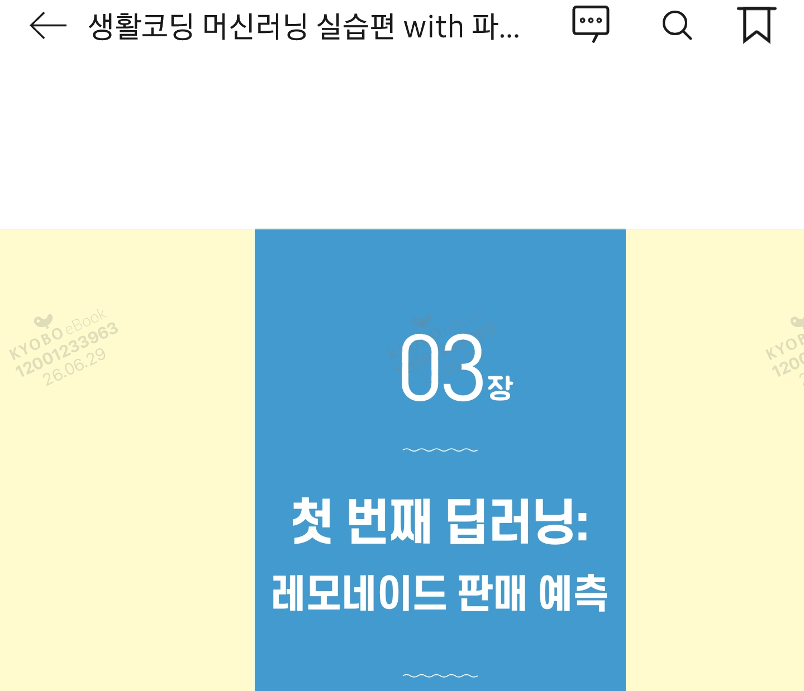
머신러님 모델올 만드는 과정과
손실의 의미틀 알아본 다음 레모네이드 판매량올 예측하는 지도학습 모델올 만들어넘니다
01 머신러님 모델올 만드는 과정 02 손실의 의미 03 레모네이드 판매 예측 실습
2
9
789 (57/320p)

머신러님 모델올 만드는 과정과
손실의 의미틀 알아본 다음 레모네이드 판매량올 예측하는 지도학습 모델올 만들어넘니다
01 머신러님 모델올 만드는 과정 02 손실의 의미 03 레모네이드 판매 예측 실습
2
9
789 (57/320p)
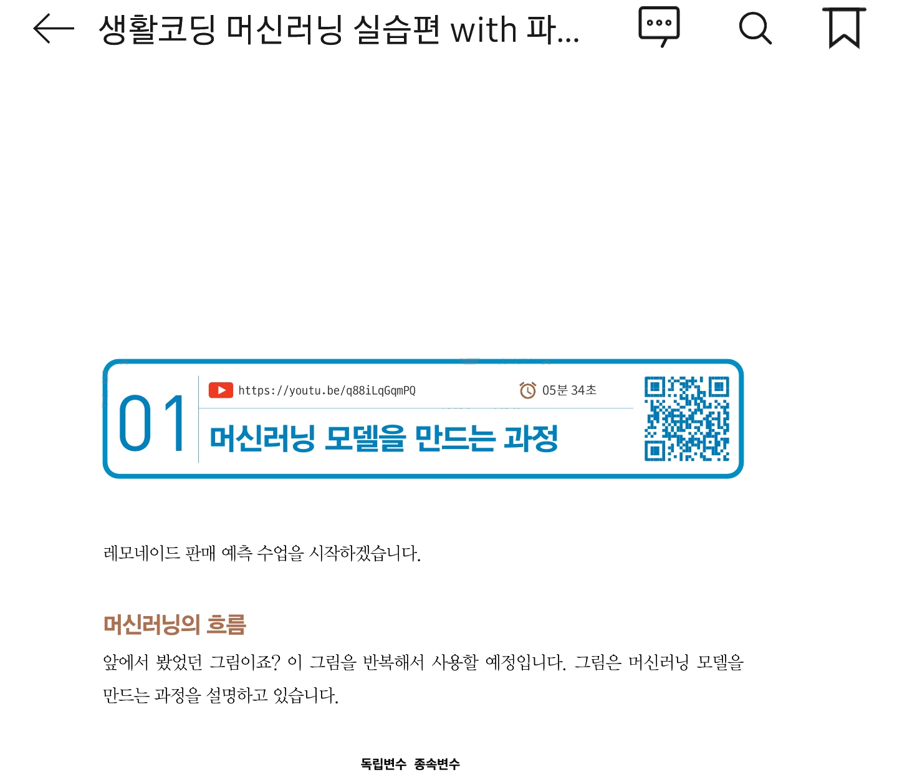
온도 20
판매량
# 1.과거의 데이터지 준비합니다.
23
# 3 데이터로 모델올 학습(FIT)합니다.
# 2. 모델의 구조v 만문니다
15 원인
모델
30 결과
판매량_온도X2
# 4. 모델올 이용합니다
그림 3.1 머신러널의 흐름
이 그림에서 한글로 작성리 부분만 떼어서 나열해보면 이렇습니다.
42 01부 테서들로 101
2
9
189 (58/320p)
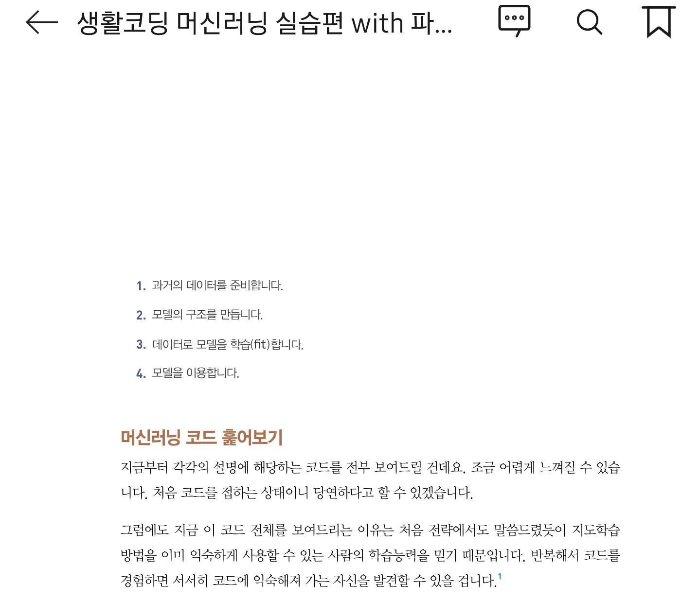
#1 과거의 데이터지 준비 첫 번째는 독립변수와 종속변수름 분리해서 데이터지 준비하는 부분입니다.
# 1. 과거의 데이터지 준비합니다 . 레모네이드 pd.read_CsV(' Lemonade.cSV' ) 독립 레모네이드[[' 온도 ' 1] 종속 레모네이드[[' 판매량 ' 1]
print(독립.shape, 종속.shape)
#2 모델의 구조v 만들기 두 번째가 모델올 만드는 부분인데요. 이 4줄의 코드는 사실상 우리 수업 전체의 핵심이라고 할 수 있습니다. 수업올 통해 이 4줄의 코드틀 깊이 들여다보러고 합니다.
# 2. 모델의 구조v 만듬니다 . X tfkeras.Layers.Input(shape-[1])
(덕은이) 여기서는 코드트 흩어보고 실습은 3,3절에서 합나다
03장 첫 번째 답러님: 레모네이드표
2
9
78% (59/320p)
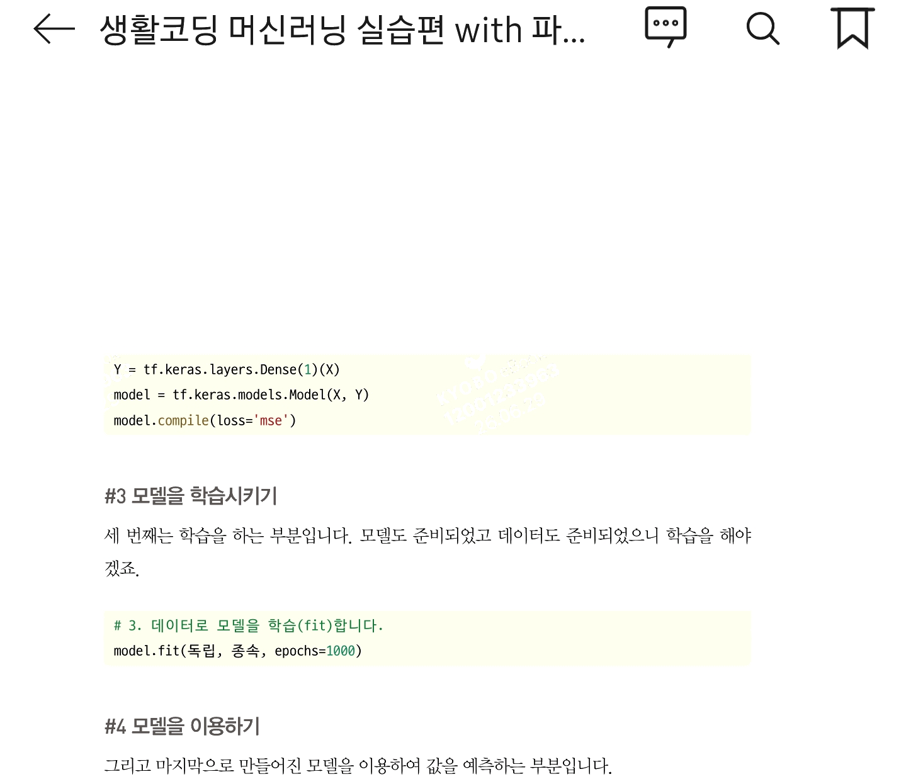
# 4. 모델올 이용합니다 . print("Predictions: modeL predict([[15]])
어떤가요? 짐작되는 부분도 있고 전혀 짐작되지 안는 부분도 있올 것입니다. 괜찮습니다. 여 러 데이터지 다루보면서 이 코드트 어떻게 이용하면 펼지 알게 덜 것입니다. 아주 조금만 이 해하면 이 코드들올 쉽게 이용할 수 있습니다.
머신러널의 흐름과 코드트 함께 살펴보기 이제부터 하나하나의 과정올 조금 더 깊이 살펴보면서 이 코드의 사용법올 알아보켓습니 다. 익숙하 그림에서 다시 시작해보조. 실제 모델이 학습되는 흐름과 코드트 매처시켜보켓 습니다.
#1 과거의 데이터지 준비 데이터지 파일에서 읽어외서 종속변수와 독립변수로 분리하는 코드는 앞에서 실습햇없조? 판다스 라이브러리블 이용해서 데이터름 읽어 오고 독립변수와 종속변수름 분리햇습니다.
44 01부 테서들로 101
2
9
79% (60/320p)
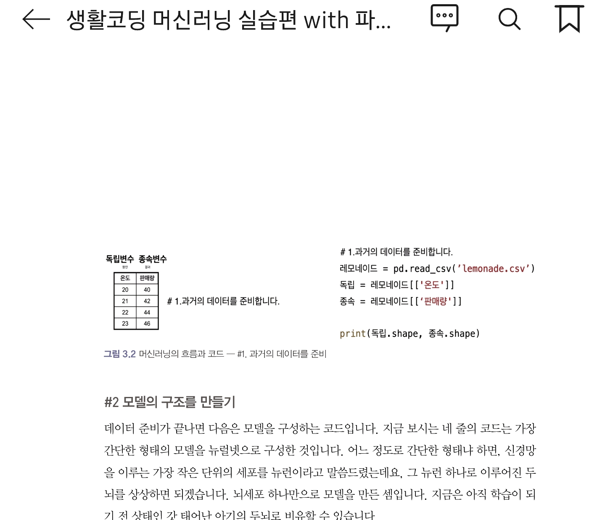
# 2 모델의 구조v 만듬니다
# 2. 모델의 구조v 만듬니다 X tf,keras.layers.Input(shape-[1] ) tfkeras,layers,Dense(i) (X) model tfkeras,modelsModel(X, Y) modeL compile(Loss= mse
모델
그림 3.3 머신러널의 흐름과 코드 - #2 모델의 구조 만들기 (1)
우리가 이 네 줄의 코드에서 눈여겨보야야 할 부분은 바로 첫 번째와 두 번째 라인에 있는 수 자 부분입니다. 이 숫자의 의미블 이해하면 어떠한 데이터지 가져와도 이 코드트 사용할 수 있게 덥니다. 우리가 준비한 독립변수의 개수는 온도라는 칼끔 하나이므로 첫 번째 줄의 숫자 부분에 1이라고 적없습니다. 우리가 준비한 종속변수의 개수가 판매량 하나조. 그래서 두 번 째 줄의 숫자에도 1이라고 적없습니다.
03장 첫 번째 답러님: 레모네이드표
2
9
79% (67/320p)
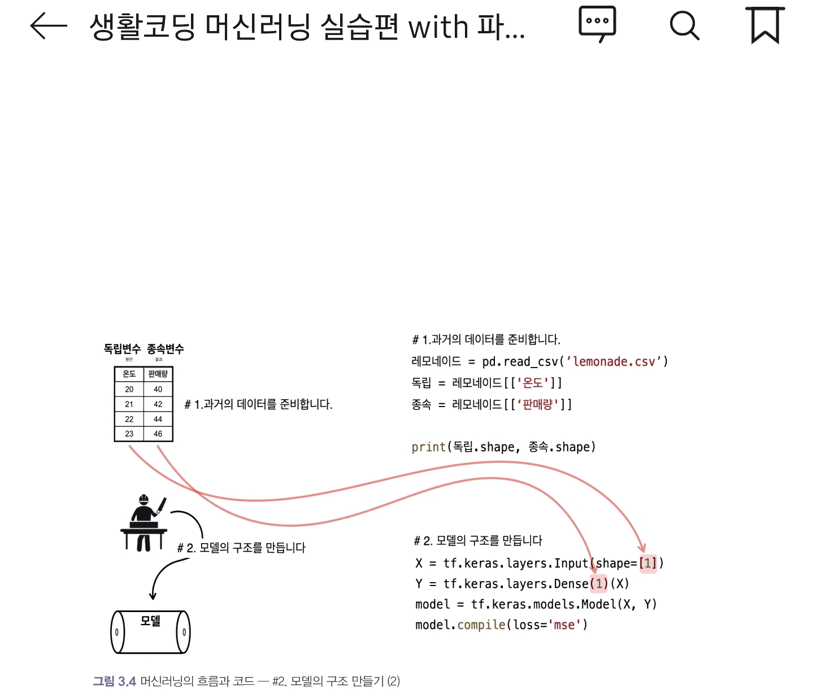
설명올 듣고 보니 이 코드 사용하는 건 정말 식은 죽 먹기조? 사용법이 어렵지 않다는 겉 알 게 되면서 기분도 좋아지고 수업에 대한 두려움도 조금 사라지석으면 종계습니다.
#3 모델올 학습시키기 다음은 구성한 모델에 준비한 데이터지 넣어서 모델올 학습시키는 도구입니다. 모델올 학습 시키논 코드는 바로 이 한 줄로. fit이라는 도구가 바로 모델올 학습시키는 기능입니다. 준비 한 데이터의 맞춤형 모델올 만들게 되는 것입니다.
46 01부 테서들로 101
2
9
79% (62/320p)
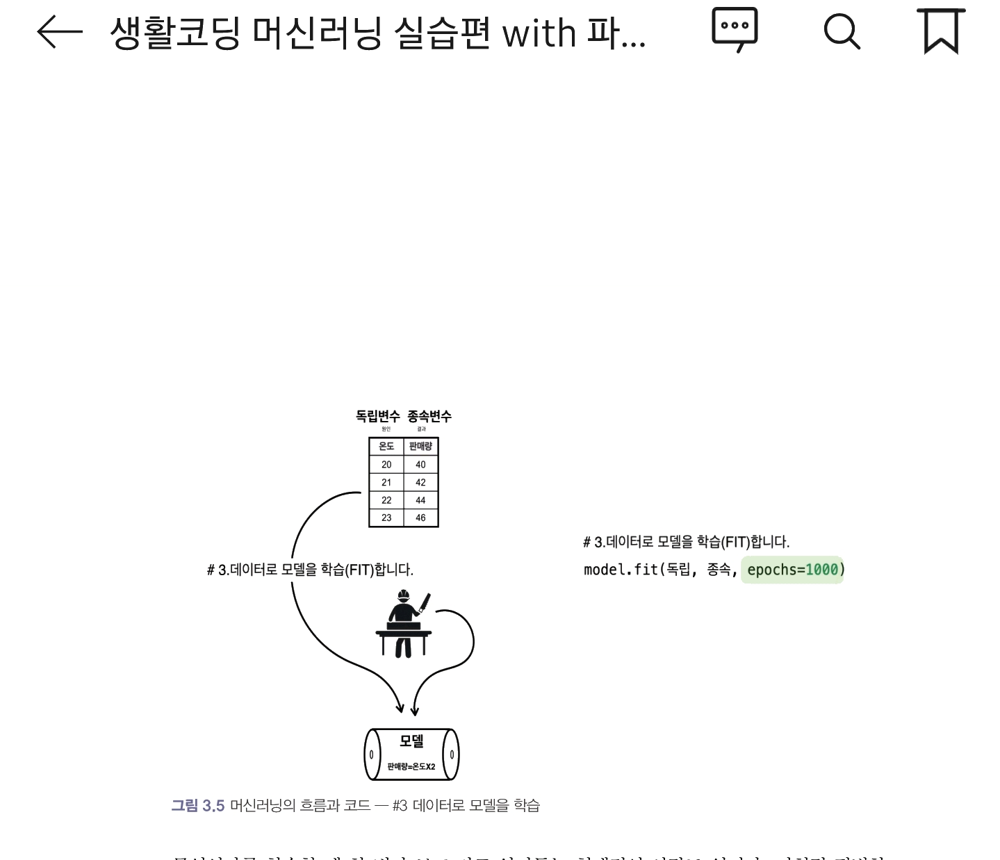
누엇인가들 약습알 때 한 번만 보고 바로 알아듣는 전재석인 사담노 있지만 저저담 평범한 사람은 한 번만 보고는 학습이 제대로 안 돼서 몇 번이고 반복해서 학습해야 겨우 지식울 습 특할 수 있습니다. 모델도 마찬가지로 여러 번 반복해서 학습해야 합니다.
여기서 epochs라는 단어는 전체 데이터지 몇 번 반복해 학습활지름 결정해주는 숫자입니다. 지금은 1000번올 학습하라고 명령올 주없습니다. 충분한 횟수로 학습올 하면 학습이 완료된 모델올 얻을 수 있습니다.
#4 모델올 이용하기 이제 모델올 이용할 일만 남앗습니다. 모델에 새로운 값을 넣없올 때 그에 맞는 결과루 반환 해주는 것올 확인할 수 있습니다.
03장 첫 번째 답러님: 레모네이드표
2
9
20% (63/320p)
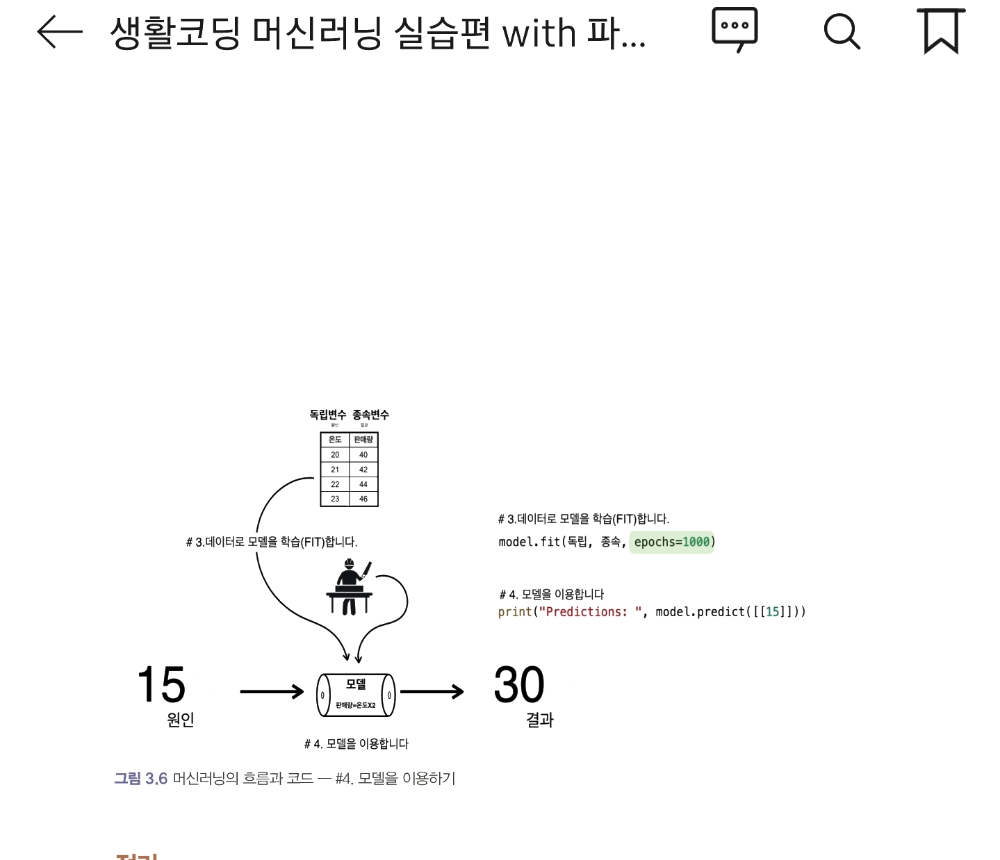
성리
배운 것올 요약해보켓습니다.
데이터지 준비하는 부분에서는 독립변수와 종속변수름 분리해서 준비합니다
여기서 독립변수가 몇 개인지 종속변수가 몇 개인지 살피는 것이 중요햇습니다 그 이유는 모델의 구조 틀 만들 때 숫자 부분올 맞취서 만들어주어야 하기 때문입니다 이 부분에 숫자루 맞취주기만 하면 준비 한 데이터름 학습할 수 있는 모델이 만들어집니다
학습올 할 때어는 몇 회 학습활지 알려 주어야 합니다
코드의 사용법올 잘 익히석나요? 이제 코드트 사용할 수 엇게 되섞습니다. 그럼 어서 우리의 첫 덥러님 모델올 만들러 가붙시다.
48 01부 테서들로 101
2
9
20% (64/320p)
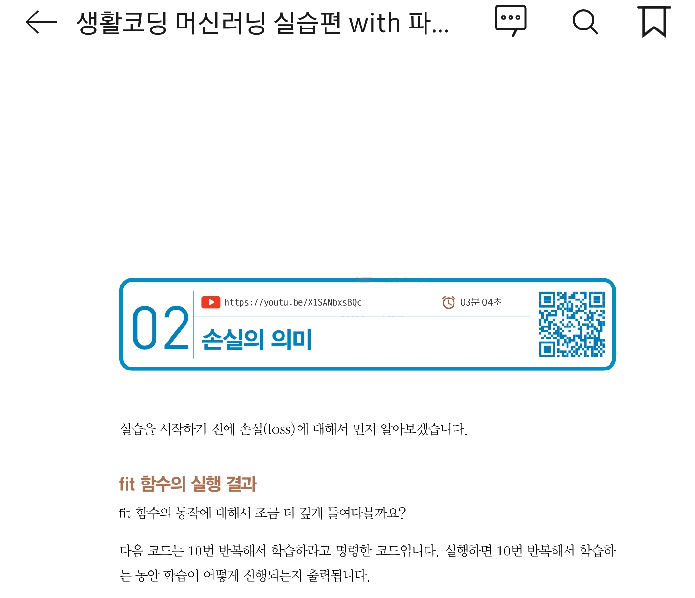
modeL.fit(독립, 종속, epochs=1o)
실행 결과
Epoch 1/10
1/1
Os Imslstep 1oss 2548.6941
Epochl2/10 1/1
Os Imslstep
Loss: 2541.5061
Epoch 3/10
1/1
0s 2mslstep Loss: 2536.3013
Epoch 4/10 1/1
0s 2mslstep Loss: 2531.9492
Epoch 5/10 1/1
0s 939us/step
1oss 2528.0898
Epoch|6/10 1/1
0s Imslstep Loss: 2524.5566
Epoch 7/10
1/1
0s Imslstep Loss: 2521.2566
Epoch 8/10
1/1
Os 802us/step
loss 2518.1318
Epoch 9/10
1/1
0s Imslstep Loss: 2515.1431
03장 첫 번째 답러님: 레모네이드 표
2
9
20% (65/320p)
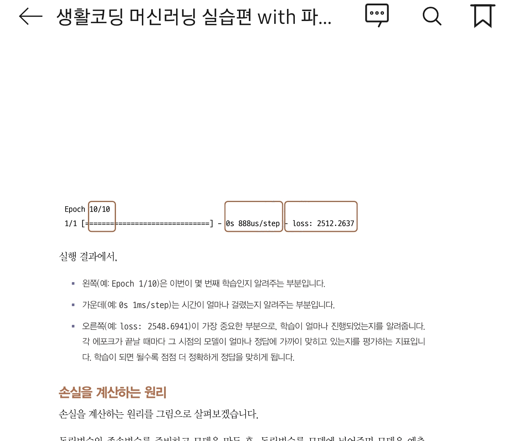
스녁고/ 거 0 =데' 근 *이스 그근크 0주; 부님u기 근 그근기 충기! 년스근간 기구
결과틀 만들어중니다.
독립
종속
온도 판매량 20 40
예측 35
21
42
모델
40
22
44
45
23
46
50
그림 3,.7 모델올 이용해 판매량올 예측
이 모델이 얼마나 종은지 평가하기 위해, 준비한 실제 정답(종속변수) 과 예측 결과루 비교합 니다: 모든 예측과 정답올 비교해서 각각의 차이(error) 틀 구하고 제곱합니다. 그리고 그것들 의 평균올 구하면 그 값이 바로 손실(loss) 이 덥니다.
50 01부 테서들로 101
2
9
27% (66/320p)
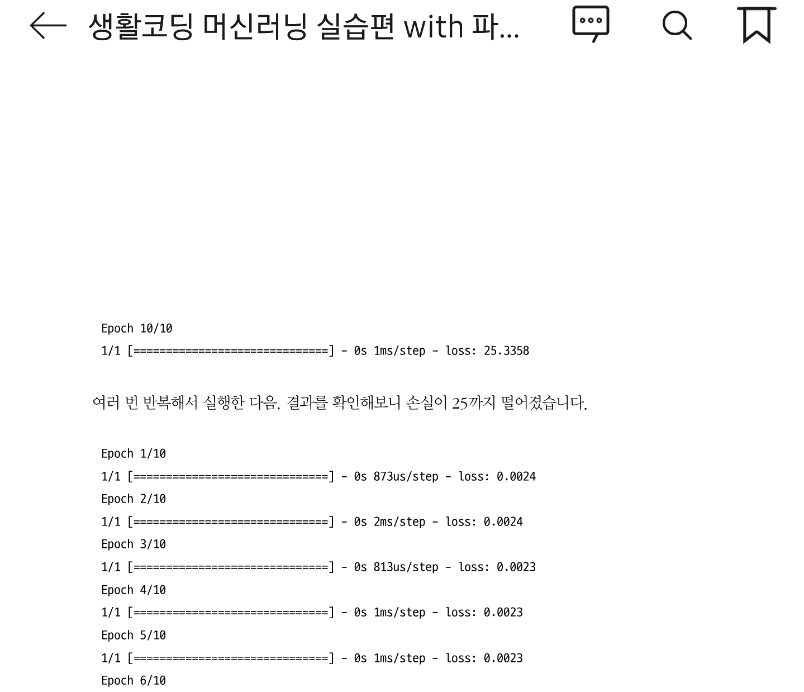
1/1
0s 2mslstep Loss: 0.0022
Epoch 7/10 1/1
Os 2mslstep
Loss: 0.0022
Epoch 8/10
1/1
0s 747us/step 1oss: 0.0021
Epoch 9/10
1/1
Os Imslstep
Loss: 0.0020
Epoch 10/10
1/1
0s 746us/step 1oss: 0.0020
계속 반복해서 실행흘 시켜보앗고 이제 0에 가까이 떨어적습니다. 이 정도 뒷으면 모델은 실 제 데이터에 대해서 예측하는 값과 정답의 차이가 평균적으로 1보다 작다고 할 수 있습니다. 거의 정확해적습니다.
52 01부 테서들로 101
2
9
27% (68/320p)
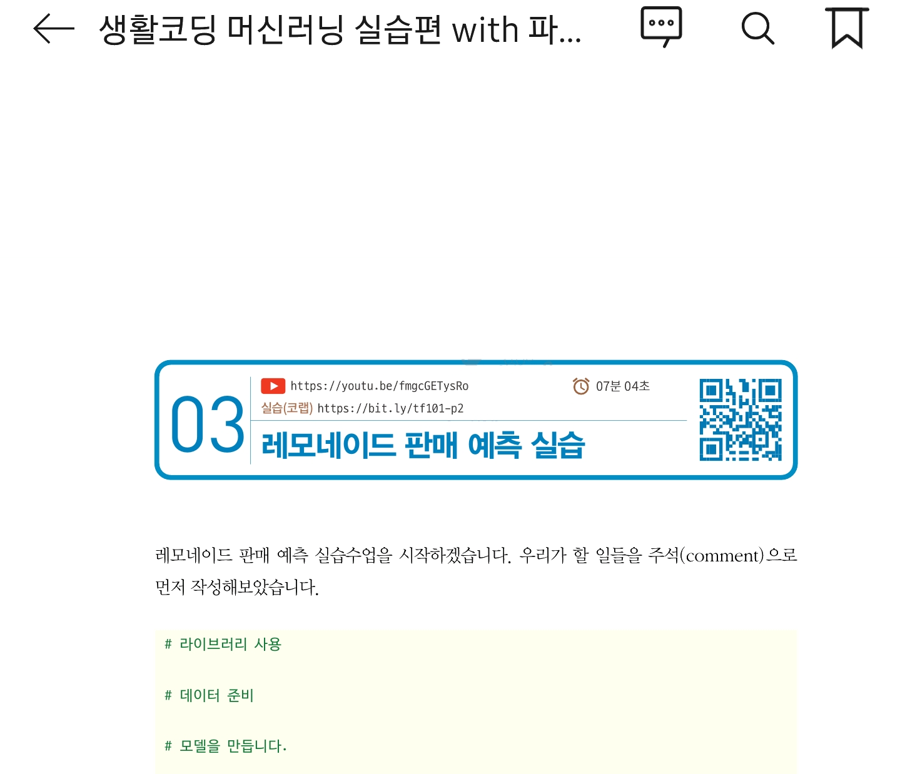
모델올 학습합니다 .
모델올 이용합니다 .
이 주석올 코드로 완성하면 레모네이드 판매 예측 모델이 완성물 겁니다. 주석올 따라서 코드 틀 완성해보켓습니다.
라이브러리 시용 테서플로와 판다스 라이브러리블 임포트하는 코드틀 입력합니다.
import tensorflow as tf import pandas as pd
데이터지 준비 이번에는 데이터지 준비하는 코드트 작성해올까요? 데이터지 준비할 때는 독립변수와 종속 변수름 나뉘야 합니다. 아래 주소의 짓하브에 올려문 파일의 URL 주소름 가지고 데이터들 직 접 읽어올 수 있습니다.
03장 첫 번째 답러님: 레모네이드표
2
9
22% (69/320p)
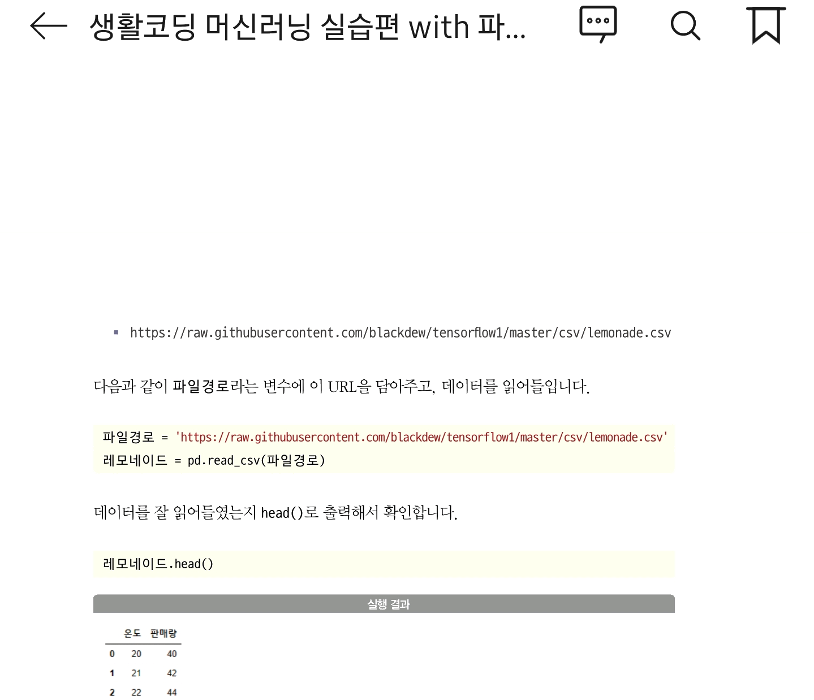
23
24
48
코드 실올 하나 더 만들고 종속변수와 독립변수로 분리하는 코드트 입력하켓습니다. 데이 터에서 온도 칼림만 떼어서 독립 변수에 담아주고. 판매량 칼끔만 떼어서 종속 변수에 담아 줍니다:
독립 레모네이드[[ ' 온도' ]] 종속 레모네이드[[ ' 판매량 ' ]]
독립 변수와 종속 변수가 잘 나뉘적는지 shape로 확인합니다. 여러 가지 방법으로 확인할 수 있는데 shape로 모양올 확인하는 방법이 가장 쉽습니다. 모델올 이 숫자에 맞게 만들어 줄 것 입니다.
print(독립. shape , 종속.shape)
실행 결과
(6, 1) (6, 1)
54 01부 테서들로 101
2
9
22% (70/320p)
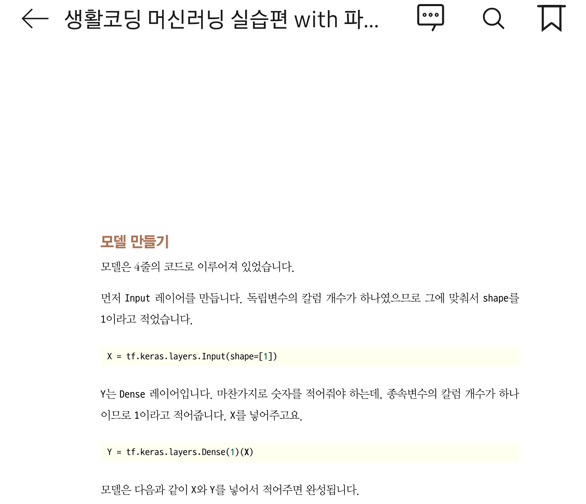
model
tf.keras.models.Model(X, Y)
그리고 compile은 모델이 학습할 방법올 정리해주는 것으로 뒤 수업에서 설명합니다. 1oss='mse' 라고 적어주면 모델이 완성되니다.
modeL.compile(1oss='mse' )
학습 모델올 완성한 다음엔 모델올 학습시켜야켓조? 한 줄의 코드로 모델올 학습시권다고 말씀드 컴습니다. 준비한 독립변수와 종속변수름 넣어주고 일단 10번만 학습해보켓습니다.
modeL.fit(독립 , 종속, epochs=10)
실행 결과
Epoch 1/10 1/1
0s Imslstep
Loss: 3543.2092
Epoch 2/10 1/1
0s 3mslstep loss: 3534.3445
03장 첫 번째 답러님: 레모네이드표
2
9
22% (71/320p)
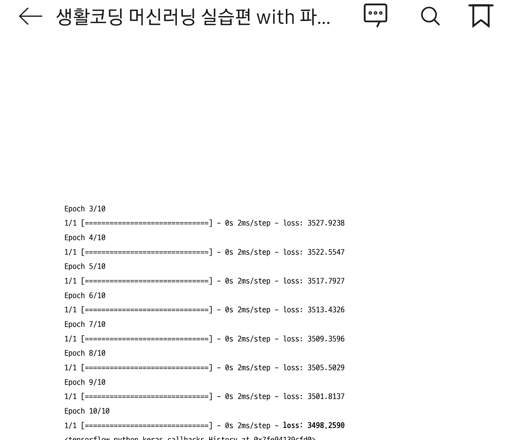
(C-u
느UW Py (o
9)
(9
느9()
Lu )
UP
C 설
C이
10번 학습하니 1oss가 3498이 되어는데. 이 정도면 손실이 높은 편입니다. 즉. 모델이 정답 올 맞히기에는 아직 부족합니다. Loss 값이 (에 가까워저야 정답올 잘 맛히는 모델이 덥니다.
그럼 Loss틀 낮추러면 어떻게 해야 활까요? 더 반복해서 학습시키면 되켓조. 10번 더 학습시 켜 보켓습니다.
modeL.fit(독립 , 종속, epochs=10)
실행 결과
Epoch 1/10
1/1
Os Zmslstep
Loss: 3494.8137
Epoch 2/10
1/1
Os 2mslstep Loss: 3491.4590
Epoch 3/10
1/1
Os 2ms Istep
Loss: 3488.1804
Epoch 4/10
1/1
Os 2mslstep
Loss: 3484.9661
Epoch 5/10 1/1
0s 2mslstep Loss: 3481.8076
56 01부 테서들로 101
2
9
23% (72/320p)
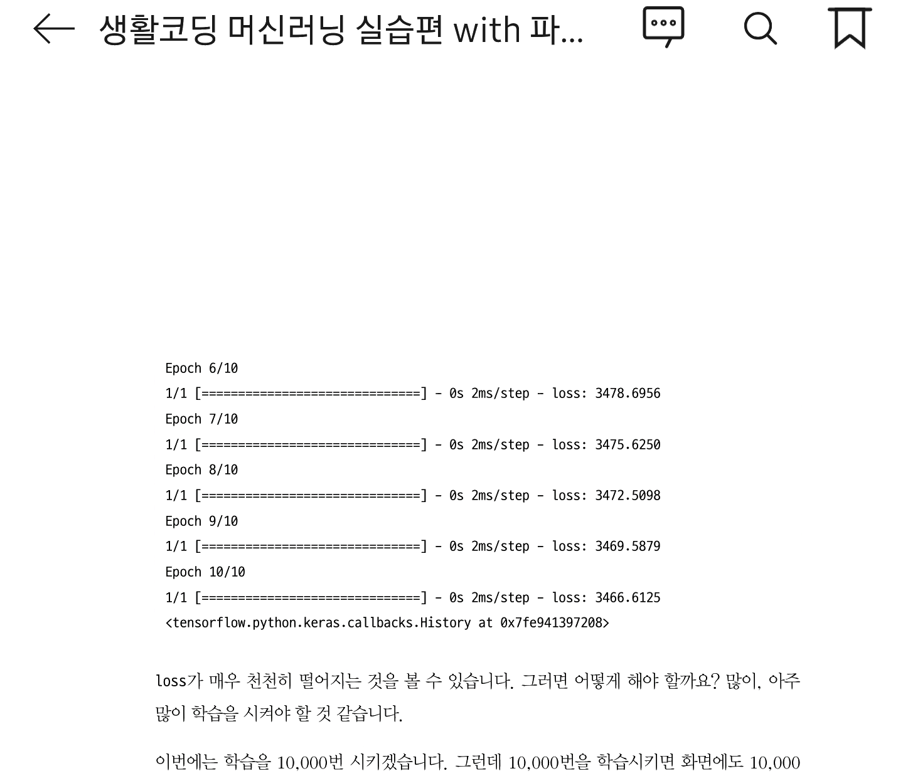
번 출력월 테니까 너무 혼린스럽켓조? 이럴 때는 verbose라는 값에 0올 넣어주면 학습하는 동안 화면 출력올 하지 않습니다.
modeL.fit(독립, 종속, epochs-10000, verbose=0)
실행 결과
10.000번올 돌려 빛습니다. 화면 출력이 되지 않으니까 학습이 잘월는지 확인할 수가 없네 요 그러면 어떻게 해야 활까요? verbose 돕션 없이 10번만 더 학습올 시켜보켓습니다.
modeL.fit(독립 , 종속, epochs=10)
실행 결과
Epoch 1/10
1/1 ==-
0s Imslstep
Loss: 2.2474e-04
Epoch 2/10 1/1
0s Zmslstep
1oss: 2.2465e-04
Epoch 3/10 1/1
0s 2mslstep Loss: 2.2449e-04
03장 첫 번째 답러님: 레모네이드표
2
9
23% (73/320p)
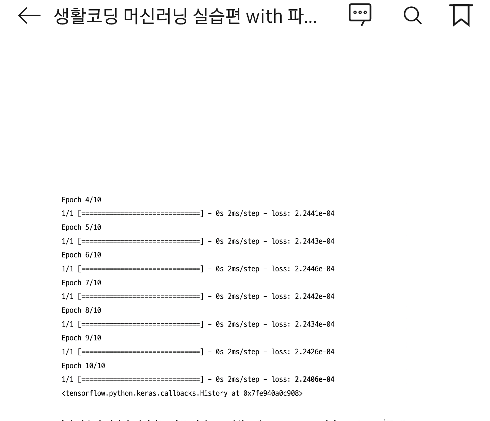
이제 학습의 결과가 이전과는 다른 형식으로 나뭇는데요 2.2406e-04에서 e-04는 10 '들뜻 합니다. 즉 0.0001이라는 숫자루 2.2406과 급해주면 덥니다. 따라서 현재 0.0002 정도의 손 실이 발생하고 있는 겁니다. 거의 0에 가까워만습니다. 그러면 이제 모델이 완성된 거젯조?
모델올 이용하기 이 모델올 확인해붙시다. 우리가 준비한 독립변수름 넣어서 종속변수의 정답과 가까이 정답 맞히논지 확인해보켓습니다.
modeLpredict(독립)
실행 결과
array([[40.003647] [41.997757], [43.991867], [45.985977], [47.980083], [49.974194]], dtype-fLoat32)
58 01부 테서들로 101
2
9
23% (74/320p)
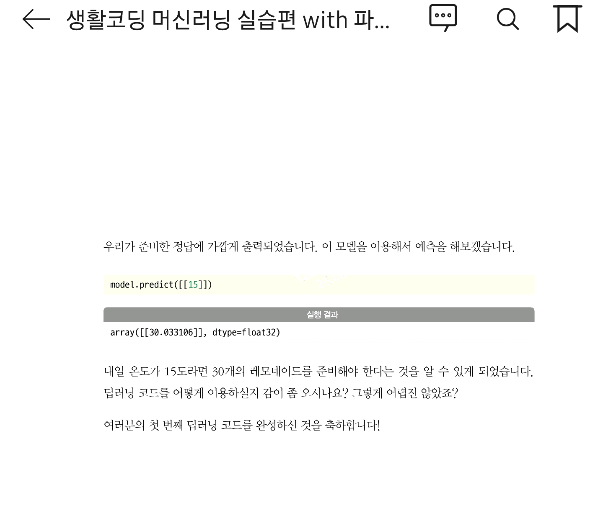
03장 첫 번째 답러님: 레모네이드표
2
9
23% (75/320p)
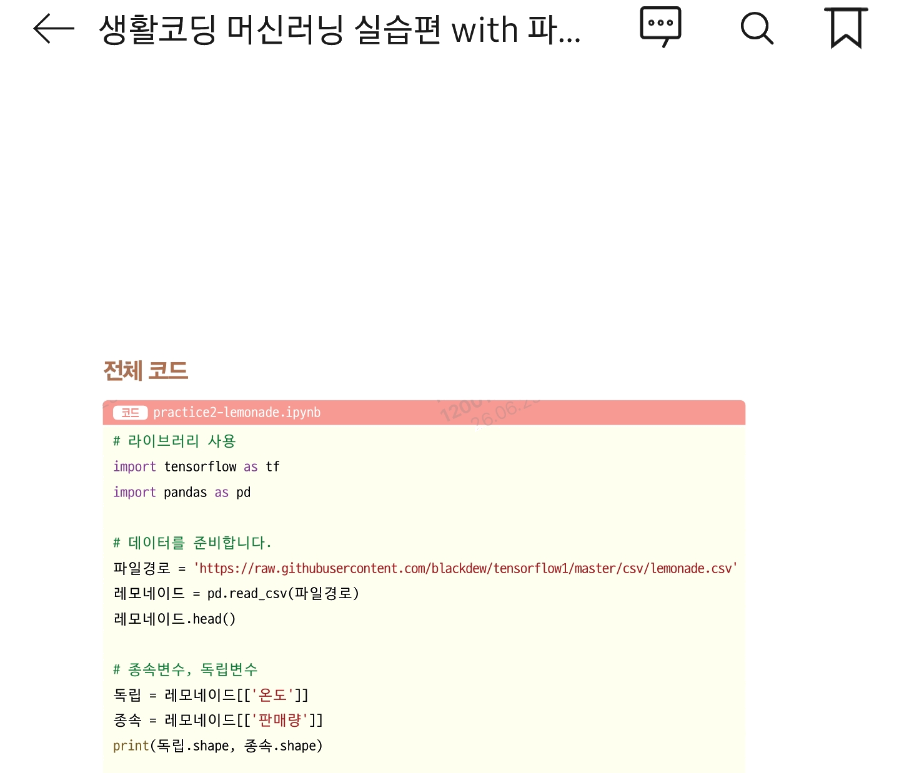
# 모델올 만듬니다 . X tf keras.layers.Input(shape-[1]) tf.keras.layers.Dense(1) (X) model tf.keras.models.Model(X, Y) modeL.compile(Loss= mse' )
# 모델올 학습시집니다 . modeL.fit(독립 , 종속, epochs=1009, verbose-0) modeL.fit(독립 , 종속, epochs=1o)
모델올 이용합니다 . print(modeL.predict(독립)) print(modeL.predict([[15]]) )
60 01부 테서들로 101
2
9
24%0 (76/320p)
보스템 주택 가격 데이터지 살펴보고 덥러님 모델올 만드는 코드트 살펴움니다 텍서들로흘 이용해 집값을 예측하는 덥러님 모델올 만들어 붐니다
01 보스템 집값 예측
02 수식과 퍼센트론 03 보스템 집값 예측 실습
2
9
24%0 (77/320p)
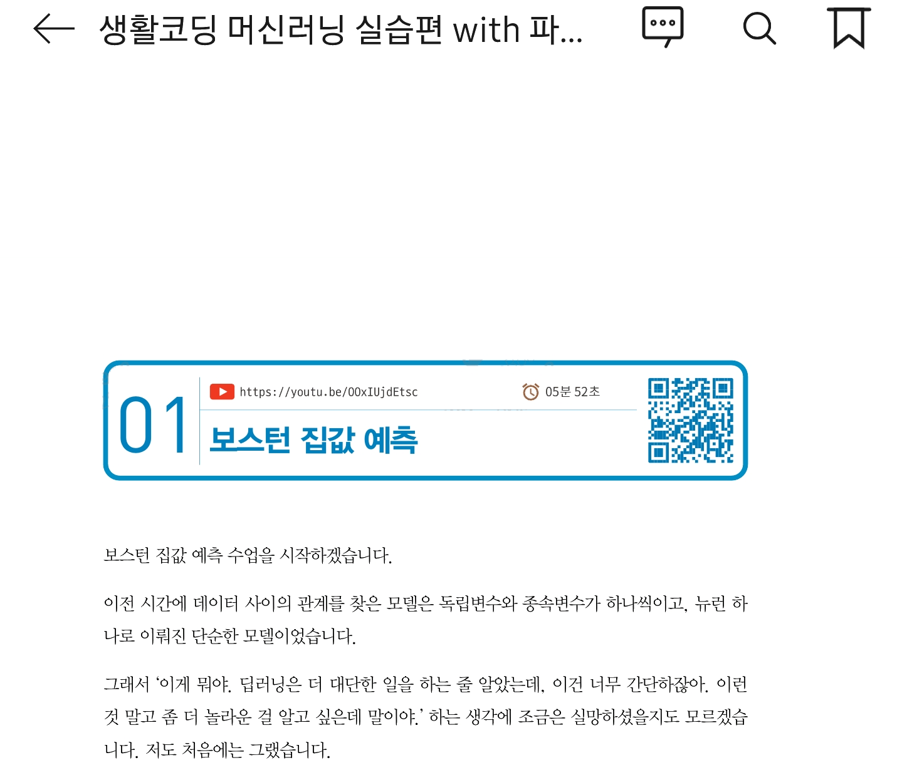
이번에 우리가 학습시길 모델은 다음과 같은 공식올 만들게 덥니다
y =
0.09832304r +0.088935934r2 +-0,060747888r3 +4.444701r, +0.95923173r5 + 3.4496038r6 +0.03198209r7 +-0.8730943r8 +0.17615545r9 +-0.00806713ri0 +0.14275435ri1 +0.017301293ri +-0.6197083r13 +2.0836691856384277
어떤가요? 기대가 되나요?
62 01부 테서들로 101
2
9
24% (78/320p)
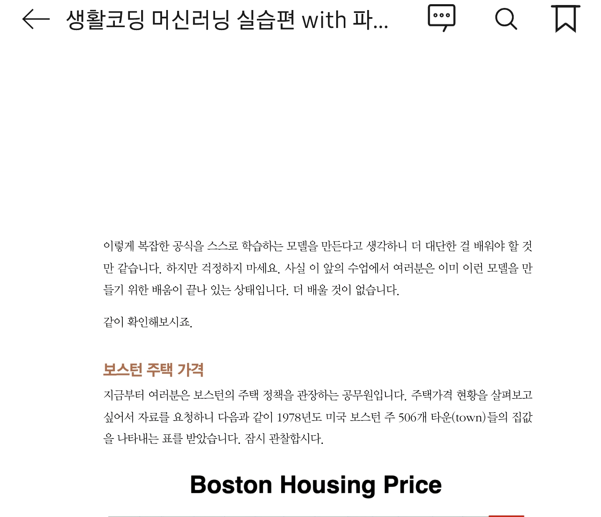
10
11
12
13
14
CRIM ZN INDUS CHAS
NOX
RM AGE DIS RAD TAX PTRATIO LSTAT MEDV KYO) 0123339 0 0.538 6.575 65.2 4.091 296 15.31 396.9 4.98 24
0.00632
18
2.31
0.02731
7.07
0.469 6.421
78.9 4.9671
242
17.8 396.9 9.14
21.61
0.02729
7.07
0.469 7.185
61.1
4.9671
242
17.8 392.83
4.03
34.7
0.03237
2.18
0.458
6.998
45.8
6.0622
222
18.7 394.63
2.94
33.4
0.06905
2.18
0.4581 7.147
54.2
6.0622
222
18.7
396.9
5.33)
36.2
0.02985
2.18
0.458
6.43
58,7
6.0622
222
18.7 394.12
5.21
28.7
0.08829 12.5
7.87
0.524 6.012
66.6
5.5605
311
15.2 395.6 12.431
22.9
0.14455 12.5
7.87
0.524 6.172
96.
5.9505]
311
15.2 396.9 19.15
27.
1.23247
8.14
0.538 6.142
91.7 3.9769)
307
21 396.9 18.72
15.2
0.17004 12.5
7.87
0.524
6.004
85.9
6.5921
311
15.2 386.71
17.1
18.9
0.22489 12.5
7.87
0.524 6.377
94.3 6.3467
311
15.2 392.52 20.45
15
8.98296
18.
0.77 6.212
97.4
2.1222
24
666
20.2 377.73
17.6
17.8
그림 4.1 보스템 집값 데이터
04장 두 번짜
2
9
25% (79/320p)
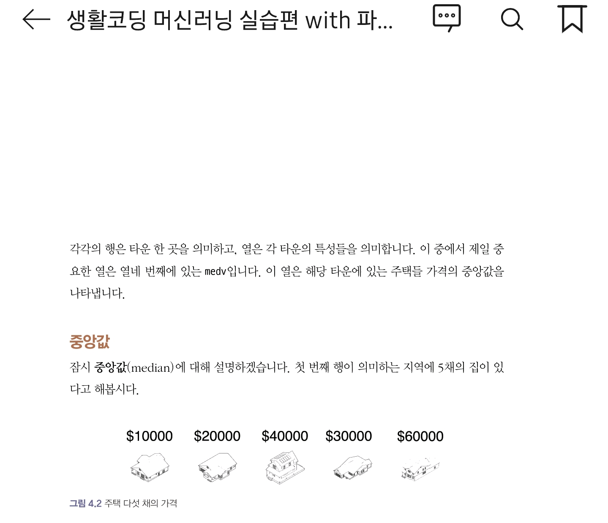
가격올 기준으로 주택들올 순서대로 정렬햇올 때 그중에서 가장 가운데에 있는 값이 바로 중 양값입니다.
median value
810000 820000 $30000 $40000
860000
그림 4.3 주택 가격의 중앙값
중앙값과 비슷하게 사용되는 값으로 평균값이 있는데요 중앙값과 평균값은 모두 집단올 대 표하기 위하여 사용되는 값입니다.
일반적으로 평균값이 집단올 대표하는 아주 좋은 지표입니다. 우리 반의 평균 성적 . 선수단의 평균 키. 대한민국 평균 수명 등 아주 많은 곳에서 사용되니다.
64 01부 테서들로 101
2
9
25% (80/320p)
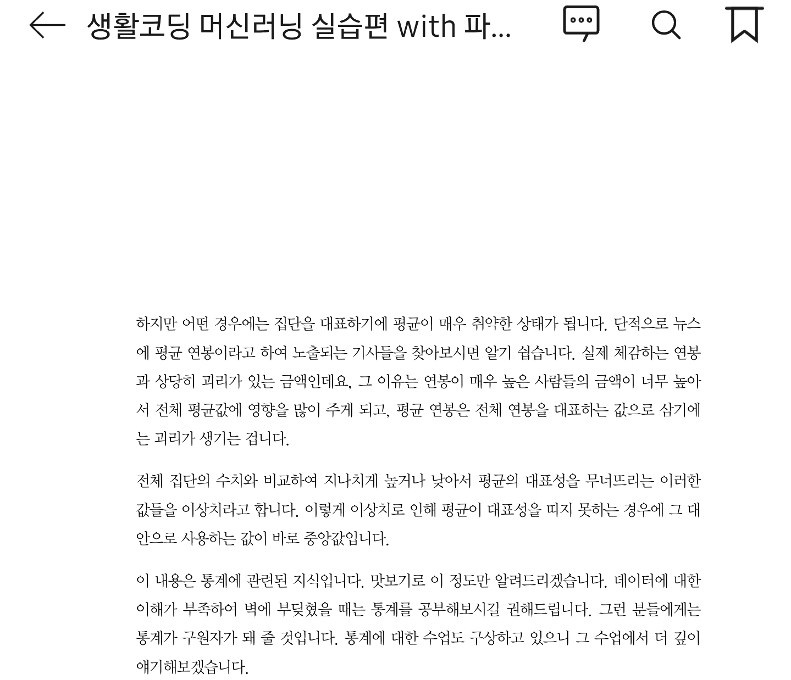
각 열의 의미 다시 표름 보켓습니다. 첫 번째 행의 MEDV 값인 24는 해당 지역 주택 값 중에서 가장 가운데에 있는 값이 2만 4천 달러라는 의미입니다. 이 값이 클수록 비산 주택이 많은 지역입니다
1번째 열인 CRIM은 범죄울올 의미합니다 범죄울이 높음수록 집값은 떨어지켓조
4번째 CHAS 열은 그 지역이 찰스강 근처에 있는지틀 나타냄니다 가깝다면 1, 그렇지 않다면 0입니다
6번째 RM은 방의 개수의 평균입니다
13번째 LSTAT는 하위 계층의 비율입니다
1번째부터 13번째까지의 열은 14번째의 열인 집값에 영향올 미치는 독립변수들입니다.
04장 두 번짜
2
9
259 (87/320p)
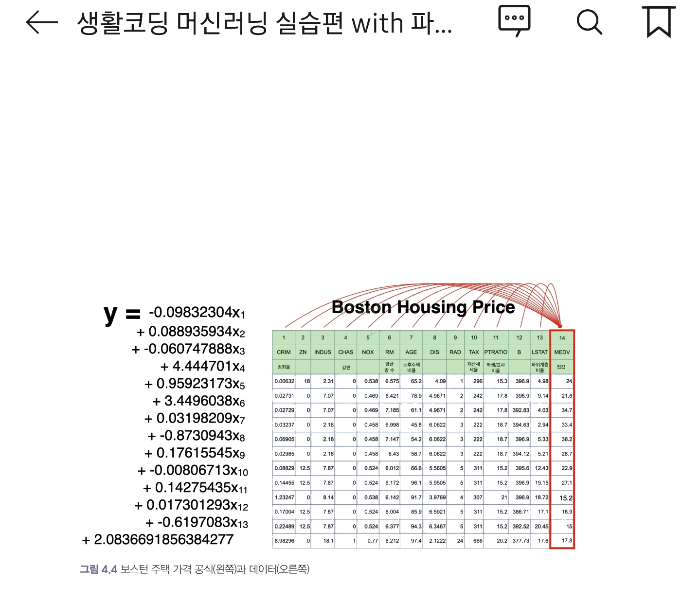
이 독립변수들이 어떻게 종속변수에 영향올 미치논지름 보여주는 공식이 바로 표의 왼쪽 에 있는 복잡한 공식입니다. x로 표시된 부분올 변수의 이름으로 변경하면 다음 식과 같이 덥니다.
MEDV = -0.09832304CRIM + 0.088935934ZN -0.060747888IVDUS + 4.444701CHAS + 0.95923173NOX + 3.4496038RM + 0.03198209AGE + -0.8730943DIS + 0.17615545RAD + -0.00806713TAX +0.14275435PTRATIO + 0.017301293B + -0.6197083LSTAT + 2.0836691856384277
66 01부 테서들로 101
2
9
269 (82/320p)
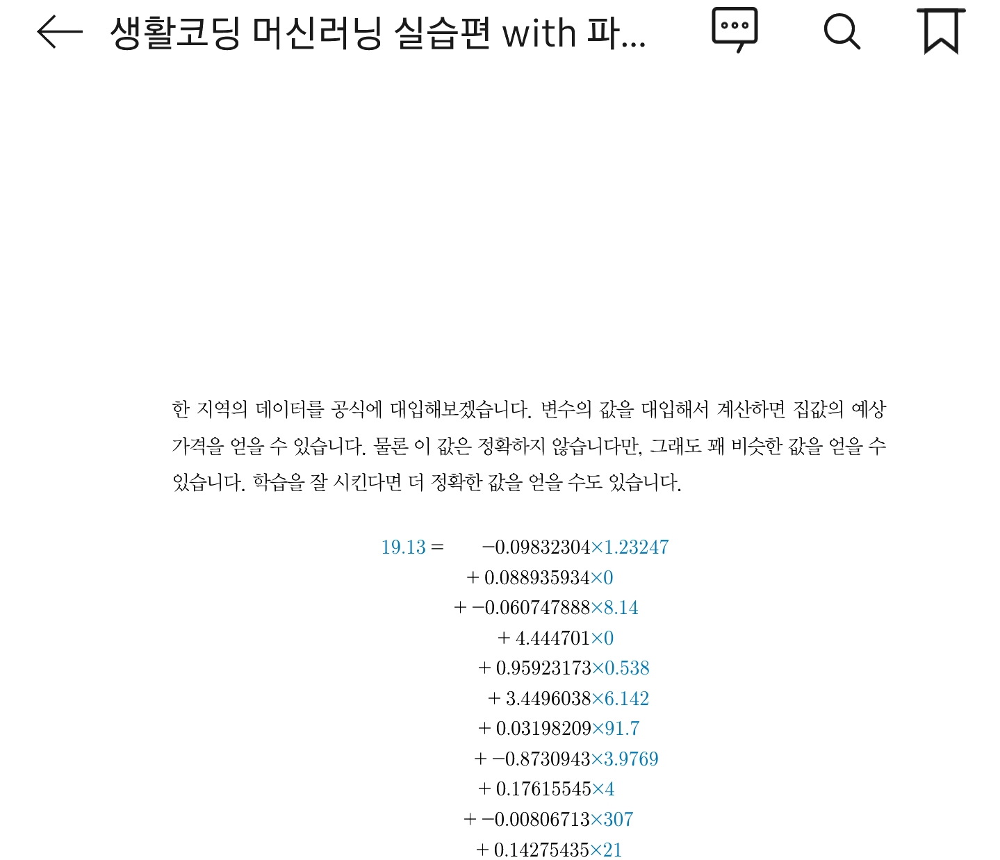
+ 0.017301293X396.9 + -0.6197083X18.72 2.0836691856384277
이런 공식올 사람이 직접 만들기가 쉬울까요? 머신러님올 이용하면 기계가 알아서 이렇계 복 잡한 공식올 만들어중니다.
이게 얼마나 대단한 일인지 곰곧이 느껴보세요. 그것올 느끼지 못하다면 머신러님 공부는 의 미가 없습니다. 즐겁지 않은 것은 말할 것도 없조.
그럼 렌서플로릎 이용해 집값올 예측하는 덥러님 모델올 만들어붙시다.
04장 두 번짜
2
9
269 (83/320p)
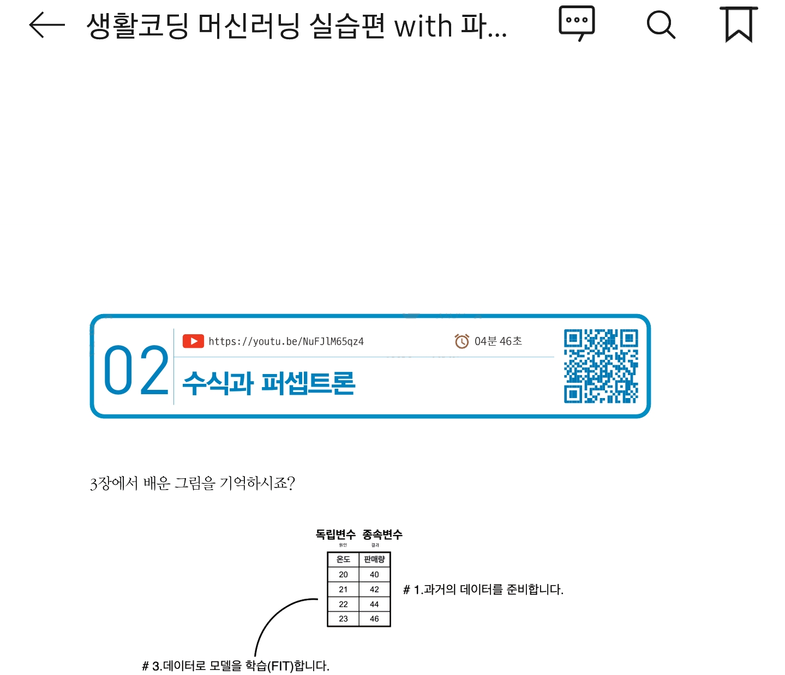
#2 모델의 구조v 만듬니다
15 원인
모델
30 결과
판매량_온도X2
# 4. 모델올 이용합니다
그림 4.5 덥러널의 과정
이 그림에서 다시 시작해보켓습니다. 우리논 이런 과정올 거처서 덥러님 모델올 완성합니다.
1 과거의 데이터틀 준비합니다
2 모델의 구조v 만듬니다
3. 데이터에 모델올 학습fit) 시청니다:
4. 모델올 이용합니다
68 01부 테서들로 101
2
9
26% (84/320p)
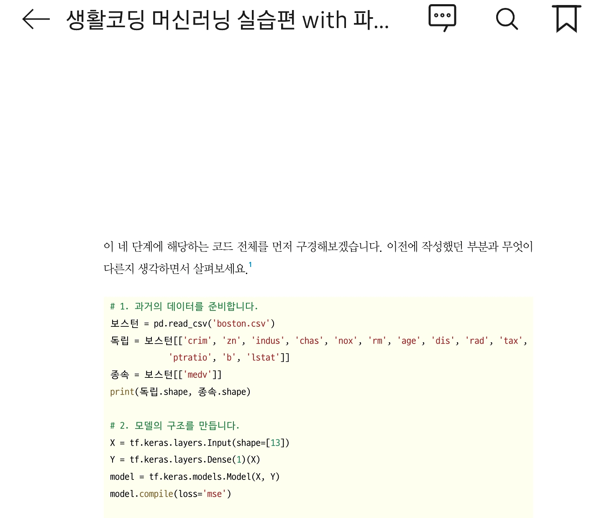
# 3 데이터로 모델올 학습 (fit)합니다 . modeL.fit(독립, 종속, epochs=1000)
# 4. 모델올 이용합니다: print("Predictions: modeL predict(독립[0:5]))
데이터름 준비하는 부분은 보스템 파일올 불러온 다음 독립변수 13개의 갈럽올 독립변수로. medv' 하나의 갈럽올 종속변수로 분리햇습니다.
1.과거의 데이터지 준비합니다 . 보스템 pd.read_csV('boston.Csv' 독립 보스템[[ ' crim' zn indus chas ptratio' b' 1stat' ]] 종속 보스템[[ 'medv' ]] print(독립.shape, 종속.shape)
'nox
rm
age
dis
rad
tax
(워은이 이 코드는 설명올 위해 핵심만 추권 것입니다 전체 코드는 다음 절에서 살펴붙니다
04장 두 번짜
2
9
270 (85/320p)
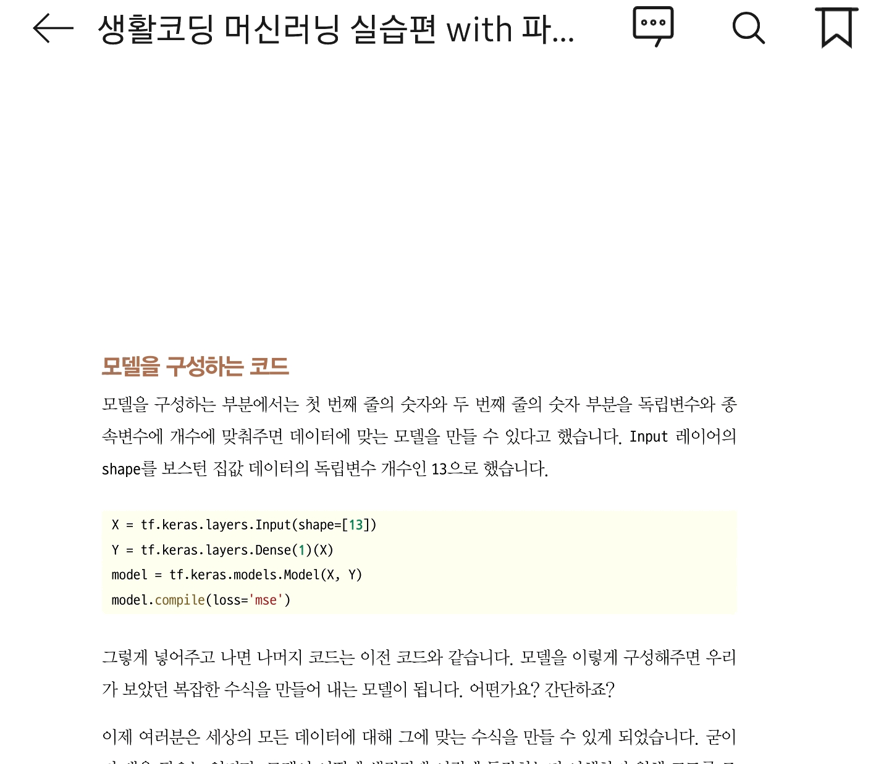
너 배율 필요든 없시난; 보델이 어봉계 생세실대 이동계 농삭하논시 이해하기 위해 고드늘 소 금만 더 들여다 보켓습니다.
입력청(Input 레이어) 보스터 집값의 독립변수가 13개이므로 Input 레이어에서 13이라늘 숫자루 사용햇습니다. 13 개의 입력올 반는 입력충올 구성하다고 할 수 있습니다.
서
X
tfkeras.layers.Input(shape-[13] ) tfkeras.Layers,Dense(1) (X) model tfkerasmodels Modei(X, Y) modeL compite(Loss= mse
X2
X3
DIS RAD TAX PTRATI
LSIA MEDV
CRIM
INDUS) CHAS NOX RM AGE
X12
0,00637
2.31
0,538 6.575 65 2
4,091
296
15,3 396.9 4.98)
0,0273'
7.07
0,469) 6-421
7B.9 4.9671
24리
17,8 396.9 9.14
21,6
X13
0.02729
7.07
0.469 7.185 61.1 4.9671
242
17.8/392.83 4.03
34.7
03237
2.18
0.458) gg8
45.8/ 6.0622)
18.71394.63] 2.94
33.4
그림 4.6 입력lnput 레이어) 구성
70 01부 테서들로 101
2
9
27% (86/320p)
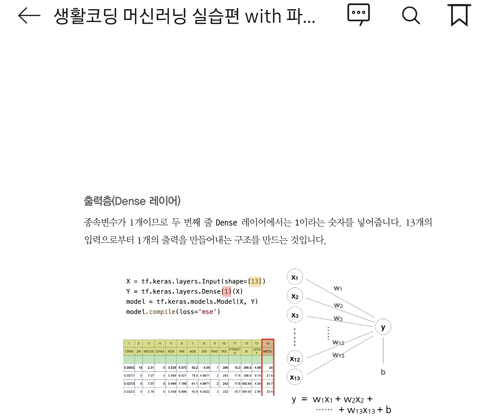
그림 4.7 출력VDense 레이어) 구성
1개의 출력올 만드는 구조의 완전한 표현은 바로 이 수식입니다. 두 번째 줄의 Dense 레이어 눈 이 수식올 만드는 것이고 컴퓨터는 학습 과정에서 입력되는 데이터지 보고 이 수식의 w 와 b틀 찾습니다.
퍼센트론, 가중치 편향의 의미 우리가 만드 이 모델은 뉴런 하나로 이루어저 있다고 말씀드껴는데요. 뉴런은 실제 두뇌 세포 의 이름이고 인공 신경망에서 이런 뉴런의 역할올 하는 녀석이 바로 우리가 만든 모형과 수식 입니다. 그리고 이 모형에는 퍼센트론(perceptron) 이라는 이름이 붙어 있습니다 . 각 w틀 부 르는 이름은 바로 가중치( weight) 입니다. 그리고 b눈 편향(bias) 이라고 부륭니다:
04장 두 번짜
2
9
270 (87/320p)
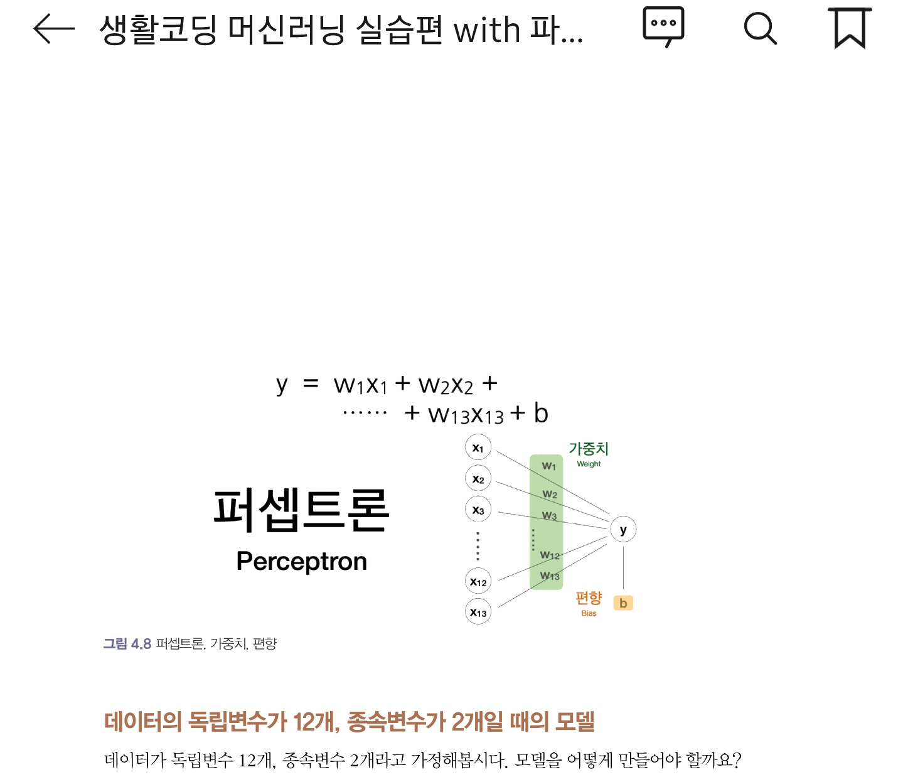
2
3
거1
12
13
14
3093 RAD CAX PTRATI CRIM ZN INDUS CHAS NOX RM AGE DIS B
LSTA MEDV
0.00637 18
2.31
0.538) 6.575 65.2
4.09
296)
15.3 396.9 4.98
24
0.0273
7.07
0.469 6.421
78.9 4.9671
242
17.8 396.9 9.14
21.6
0.02729
7.07
0.469 7.185
61.1 4.9671
2 242
17.8/392.83) 4.03
34.7
0.03237
2.18
0.458 6.998
45.81 6.0622
222
18.71/394.63) 2.94
33.4
그림 4.9 독립변수 12개 종속변수 2개로 이루어진 데이터
다음처럼 작성활 수 있젠습니다.
X
tf.keras.layers.Input(shape-[12]) tf.keras.layers.Dense(2) (X) model tf.keras.models.Model(X, Y) modeL.compile(Loss= mse
72 01부 테서들로 101
2
9
28% (88/320p)
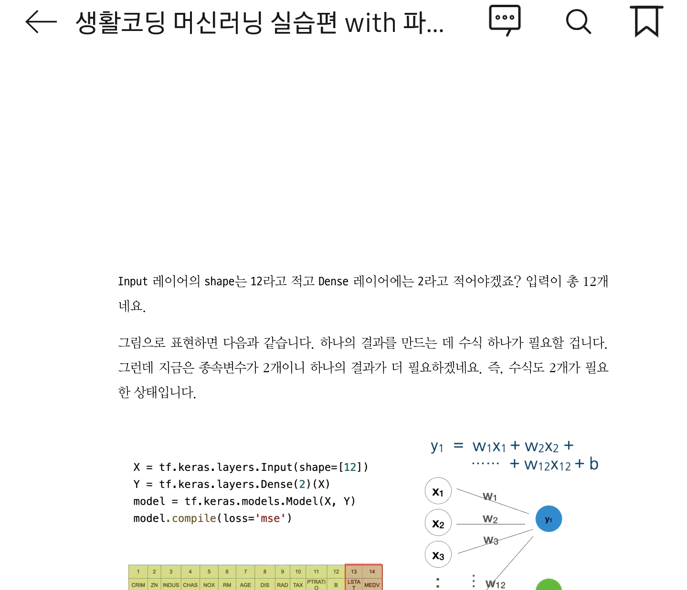
00637
2,31
0.5381 6.575) 65,2
4.09
296]
15.3 396,9
0.0273
7.07
0.4691 6.421 78.9 9671
242
17.8 396.
9.14
21.6
X12
0.02729
7,07
0.4691 7.185) 61.기 4.9671
242
17.8 392,831 4.03
34,7
0,03237
0,4581 6.998 45,B 6.0622
222
18.7 394,631 2.94
33.4
y2 - WiXI + W2X2 + + W12X12 + b
그림 4.10 독립변수 12개 종속변수 2개로 이루어진 데이터지 학습하는 모델
이 모양은 퍼센트론 2개가 병렬로 연결론 모델이 되는 것이고 찾아야 하는 가중치의 개수는 첫 번째 수식에서 w 12개와 b 1개. 두 번째 수식에서 w 12개와 b 1개 해서 총 26개입니다.
이 수업에서는 모델올 구성하는 4줄의 코드틀 깊게 들여다 보완습니다. 어떤가요? 이제 코드 가 그냥 코드로 보이지 양조? 코드트 보면서 방금 배월년 그림올 함께 떠올려주시면 덥러님 올 공부하는 게 더욱 즐거울 것입니다.
좀 자신이 생기섞나요? 이제 코드트 작성하러 가붙시다.
04장 두 번짜
2
9
289 (89/320p)
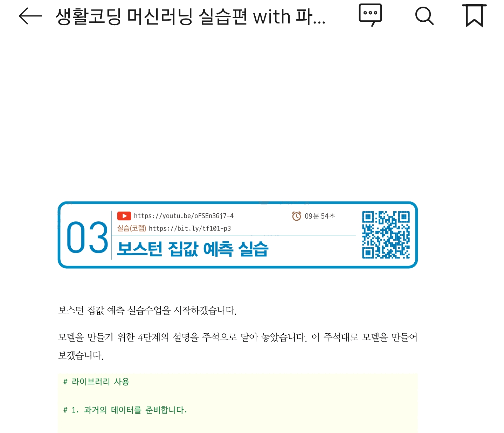
# 2 모델의 구조v 만들니다 .
# 3 데이터로 모델올 학습(fit)합니다 .
# 4. 모델올 이용합니다 .
사실 이전 시간에 레모네이드 판매량 예측 모델올 만들없면 코드와 몹사합니다. 복습한다는 생각으로 따라해주시면 되켓습니다.
이번 시간에는 코드트 추가로 배우기보다는 이 코드의 의미블 음미하면서 코드트 작성해보시 길 바람니다.
라이브러리 시용 먼저 l서플로와 판다스틀 로딩합니다.
import tensorflow as tf import pandas as pd
74 01부 테서들로 101
2
9
289 (90/320p)
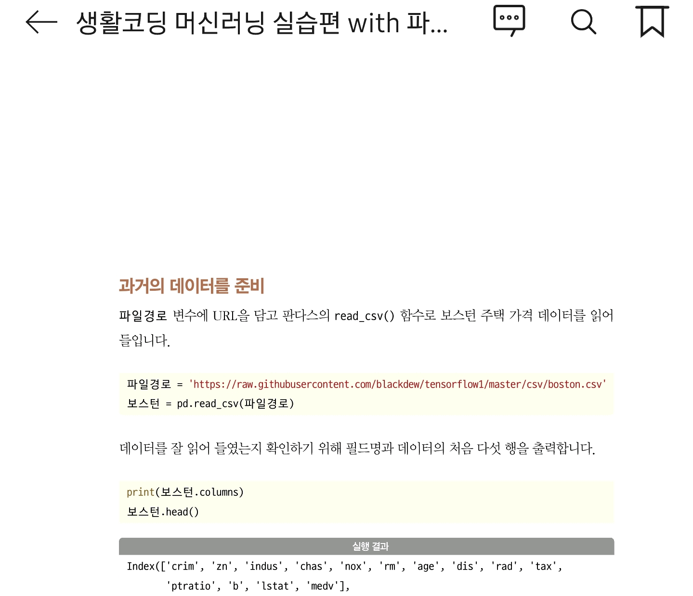
dtype='object')
crim
Zn indus chas
nox
Tm age
dis rad tax ptratio
Istat medv
0.00632 18.0 2.31
0.538 6.575 65.2 4.0900
296
15.3 396.90 4.98 24.0
0.02731 0.0
7.07
0.469 6.421 78.9 4.9671
242
17.8 396.90 9.14 21.6
0.02729 0.0
7.07
0.469 7.185 61.1 4.9671
242
17.8 392.83 4.03 34.7
0.03237
0.0
2.18
0.458 6.998 45.8 6.0622
222
18.7 394,63 2.94 33.4
0.06905 00
2.18
0.458 7.147 54.2 6.0622
222
18.7 396.90 5.33
36.2
그다음으로는 종속변수와 독립변수름 분리합니다. 앞의 13개 칼끔이 독립변수이고 종속변 수는 medv 칼럽이엇조?
독립
보스템[ [ ' crim' zn indus chas ptratio b Lstat']] 보스템[[ 'medv' ]]
nox
rm
age
dis
rad
tax
종속
이렇게 분리하고 나면 꼭 shape틀 확인해주시기 바람니다. shape가 어떻게 나뉘점올 거라고 예상만 하고 확인하는 작업올 소홀히 여기는 경우가 있는데. 꼭 눈으로 확인해야 합니다.
04장 두 번짜
2
9
289 (91/320p)
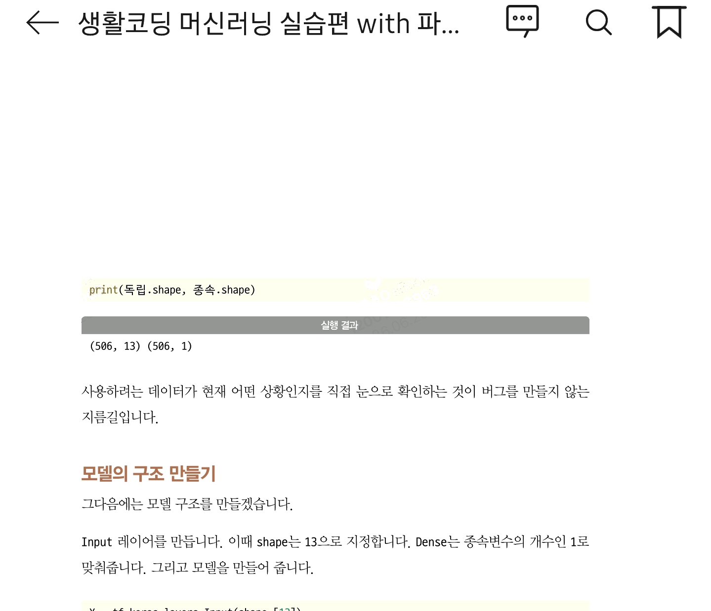
.Kerds. Ldyer > . LIpuL( Sliape-L 13] )
tf keras.layers.Dense(1)(X) model tf.keras.models.Model(X, Y) modeL.compile(Loss='mse )
모델올 학습 그다음에 모델올 학습하켓습니다.
fit 함수로 학습올 하고 epochs는 일단 10번만 돌려보켓습니다.
modeL.fit(독립 , 종속, epochs=1o)
실행 결과
Epoch 1/10 16/16
Os Zmslstep
1oss: 35951.5547
Epoch 2/10 16/16
0s 2mslstep 1oss: 29834.5566
Epoch 3/10 16/16
0s 2mslstep 1oss: 25052.8203
Epoch 4/10
76 01부 테서들로 101
2
9
290 (92/320p)
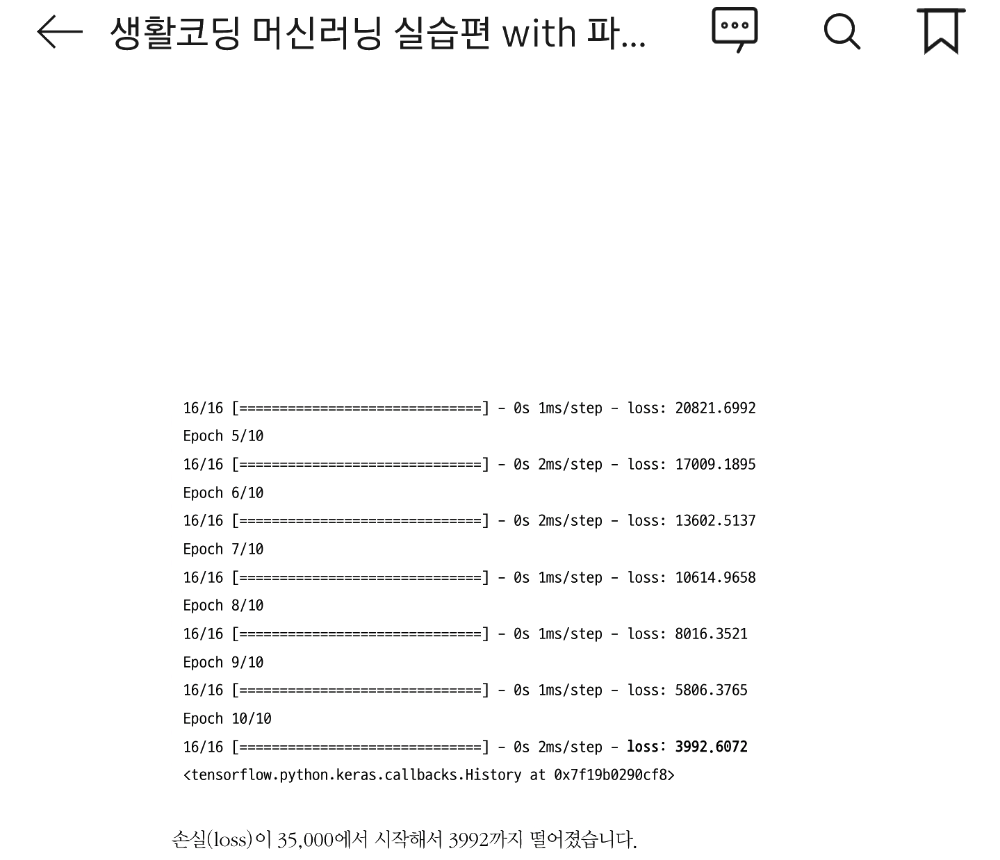
100번 더 학습시켜 보켓습니다.
modeL.fit(독립, 종속, epochs=100)
실행 결과
(생락) Epoch 96/100 16/16 Epoch 97/100 16/16
0s 2mslstep 1oss 45.0386
Os 2mslstep
Loss 45.1892
Epoch 98/100 16/16
0s Imslstep 1oss 44.6037
Epoch 99/100 16/16
Os 2mslstep
loss 45.0864
Epoch 100/100
16/16 Os 2mslstep 1oss: 44.7527
손실이 44까지 떨어져습니다. 손실이 꾸준히 감소한다는 것은 아직도 학습할 여력이 많이 남 아 있다는 얘기입니다.
04장 두 번짜
2
9
29% (93/320p)
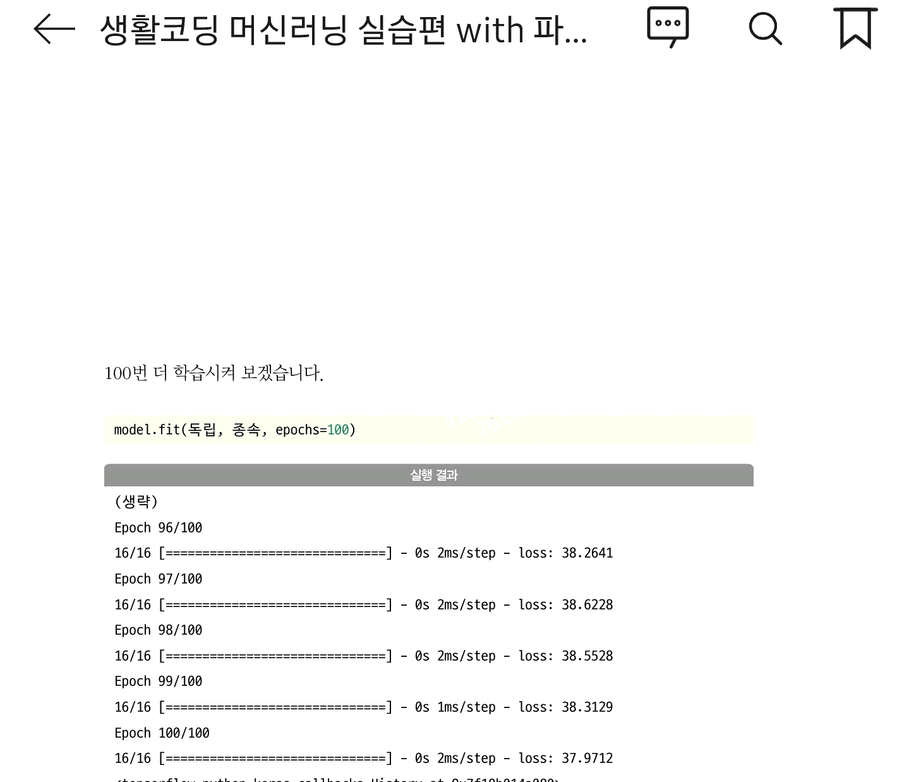
아직도 더 학습해도 것 같습니다. 많이 해불까요? verbose-@으로 설정해 출력 없이 1000번 더 학습시권 후. 10번 더 학습하면서 결과루 출력하 켓습니다. modeL.fit(독립 , 종속, epochs=1009, verbose=0) modeL.fit(독립, 종속, epochs-1o) 실행 결과 (생락) Epoch 6/10 16/16 Os Zmslstep 1oss: 25.5123 Epoch 7/10 16/16 Os Imslstep 1oss: 25.4352 Epoch 8/10 16/16 Os Imslstep 1oss: 25.7912 Epoch 9/10 16/16 Os Zmslstep 1oss: 25.5681 Epoch 10/10 78 01부 테서들로 101 2 9 290 (94/320p)
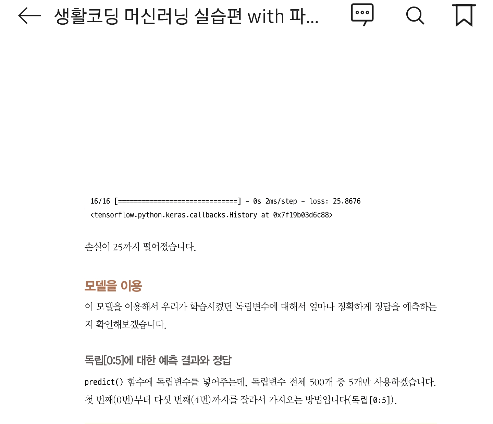
print(modeL predict(독립[0:5]))
실행 결과
array([[29.021164], [24.316029], [30.230757], [29.419598], [28.853714]], dtype-fLoat32)
종속변수의 첫 번째(0번) 부터 다섯 번째(4번) 까지의 정답올 출럭합니다. 파이씬에서 이렇계 일부만 끊어서 사용하는 문법올 슬라이싱(slicing) 이라고 합니다.
종속[0:5]
실행 결과
medv
24.0
21.6
34.7
33.4
36.2
04장 두 번짜
2
9
30% (95/320p)
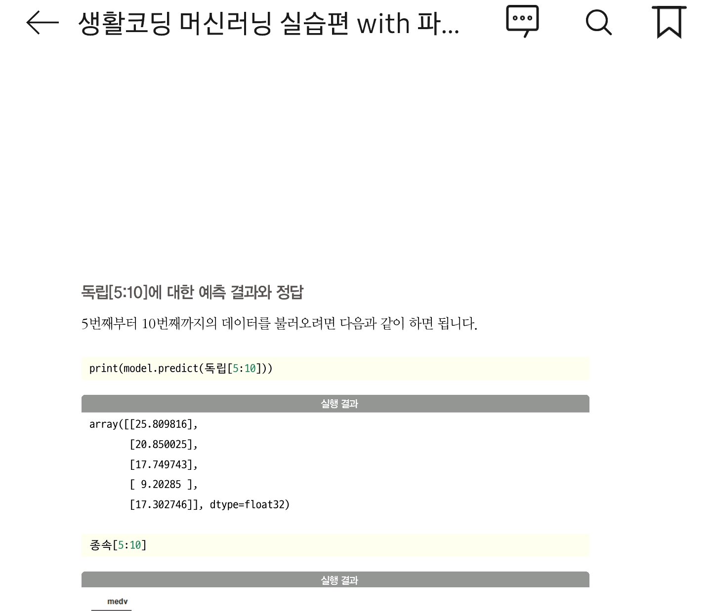
28
22,9
27,
16,5
18,9
위의 실행 결과틀 비교해보면. 첫 번째(5번) 행에 대해 모델이 예측한 값은 25(소수점 아래 생락) 인데 실제 정답은 28이/고. 두 번째(6번) 행은 20으로 예측햇는데 실제 정답은 22옆 습니다:
세 번째(7번) 행은 27올 17로 예측햇고. 네 번째(8번) 행은 16올 9로 예측햇고 다섯 번째(9 번) 행은 18올 17로 예측햇습니다.
아주 만족스럽진 않지만. 그래도 꽤 근접한 근사치틀 만들어 내고 있습니다. 회귀에서 10096 정답올 맛히다는 건 거의 불가능한 일이라고 보시면 덥니다. 오차지 최소한으로 줄이는 게 목 적이 되직습니다.
80 01부 테서들로 101
2
9
309 (96/320p)
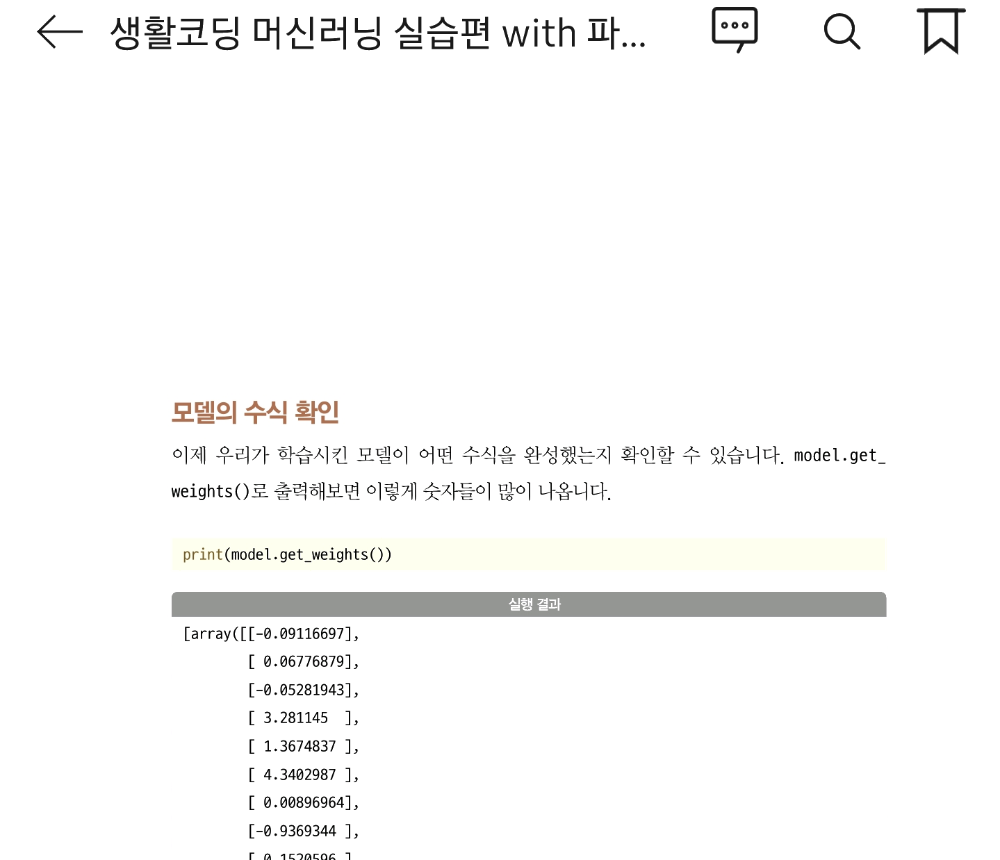
노그 [-0.0102519 ], [-0.07209726], [ 0.0151307 ], [-0.55185544]], dtype-float32) array([2.62644], dtype-fLoat32)] 이 숫자들올 앞에서 배운 수식으로 나타내면 다음과 같습니다. 이런 수식올 컴퓨터가 스스로 학습해서 만들어넷습니다. 집값 -0.09116697 X1 + 0.06776879 X2 -0.05281943 3.281145 X4 1.3674837 X5 4.3402987 X6 X3 0.00896964 X7 -0.9369344 X9 0.1520596 X9 -0.0102519 X10 + -0.07209726 X11 0.0151307 X12 -0.55185544 X13 2.62644 이번 수업에서는 모델올 만드는 부분에 대해서 좀 더 깊이 들여다방습니다. 04장 두 번짜 2 9 30% (97/320p)
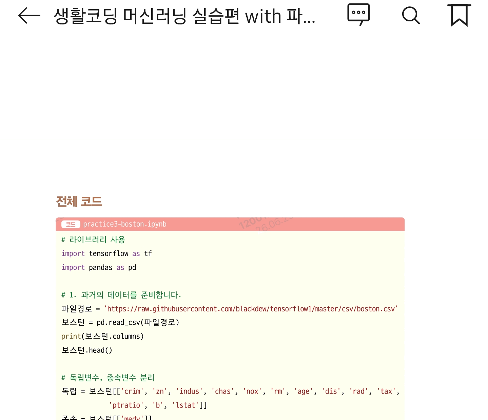
느너
print(독립. shape, 종속.shape)
2 모델의 구조v 만들니다 . X tf keras.layers.Input(shape-[13]) tf.keras.layers.Dense(1) (X) model tf.keras.models.Model(Xs Y) modeL.compile(Loss= mse' )
# 3. 데이터로 모델올 학습 (fit)합니다 . modeL.fit(독립 , 종속, epochs=10oo, verbose=O) modeL.fit(독립, 종속, epochs-1o)
# 4. 모델올 이용합니다 . print(modeL. predict(독립[5:10]) )
# 종속변수 확인 print(종속[5: 10])
모델의 수식 확인 print(modeL.get_weights())
82 01부 테서들로 101
2
9
37% (98/320p)
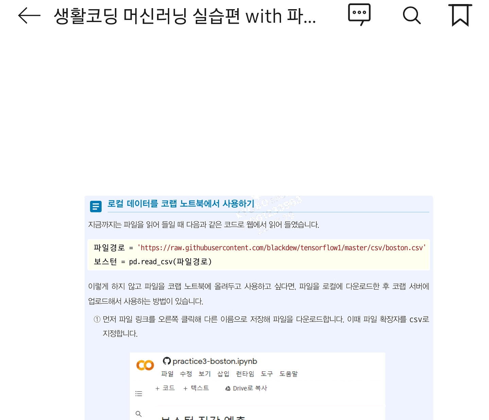
도-년 의비 메부
github csv urllbttps llraw git 사 )에서 팀크 열기 사 창에서 팀크 열기 [ ] # 라이브러리 사용 시=핏 장에서 킬크 열기 import tensorflow as tf import pandas as pd 다른 이름으로 림크 저장. 림= 주소 복사 [ ] # 1. 과거의 데이터틀 준비합니 파일결로 https:/raw aithu 검사 보스템 pd,read_csV(파일경로) 그림 4.11 CSV 파일올 다운로드
Itensc
rflowl/
코램 화면 왼쪽의 풀더 아이런미올 클렉하고 업로드 아이컨죄올 콜렉해 cSV 파일올 업로드합니다
CO 'practice3-bostonipynb 파일 수정 보기 살입 런타임 도구
파일
서선 저장소에 업로드
sample_data
그림 4.12 CSV 파일올 코립에 업로드
04장 두 번짜
2
9
37% (99/320p)
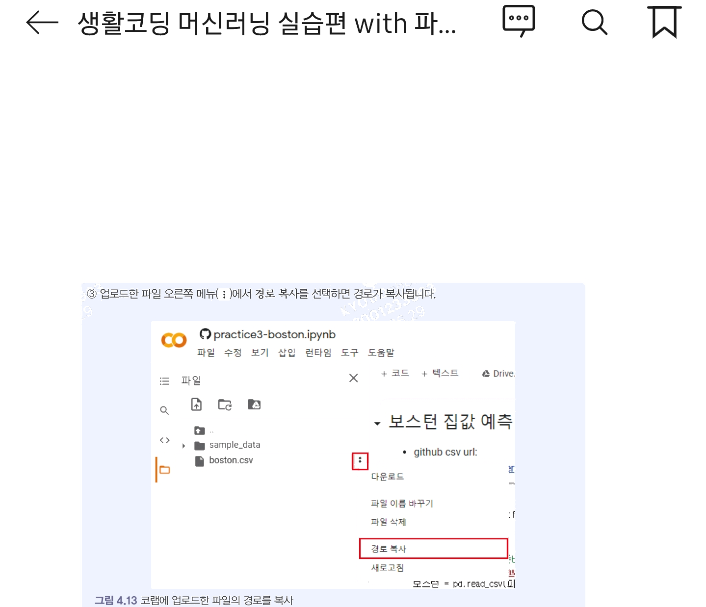
복사한 경로름 코드에 붙여넣으면 코램에 올려진 파일로 학습할 수 있습니다
파일경로
content/boston.csV
84 01부 테서들로 101
2
9
37% (700/320p)
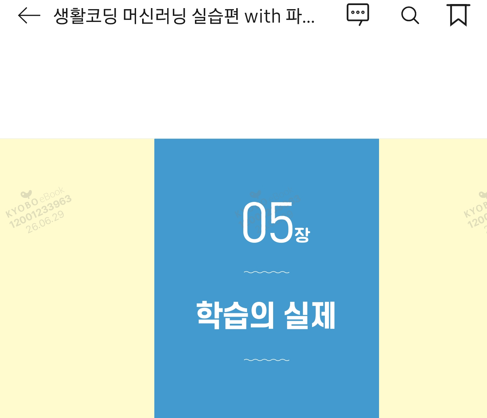
수식의 기중치들올 실제로 어떻게 찾아나가는지 스프레드시트에서 직접 실습해붙니다
01 학습의 실제
2
9
32% (707/320p)
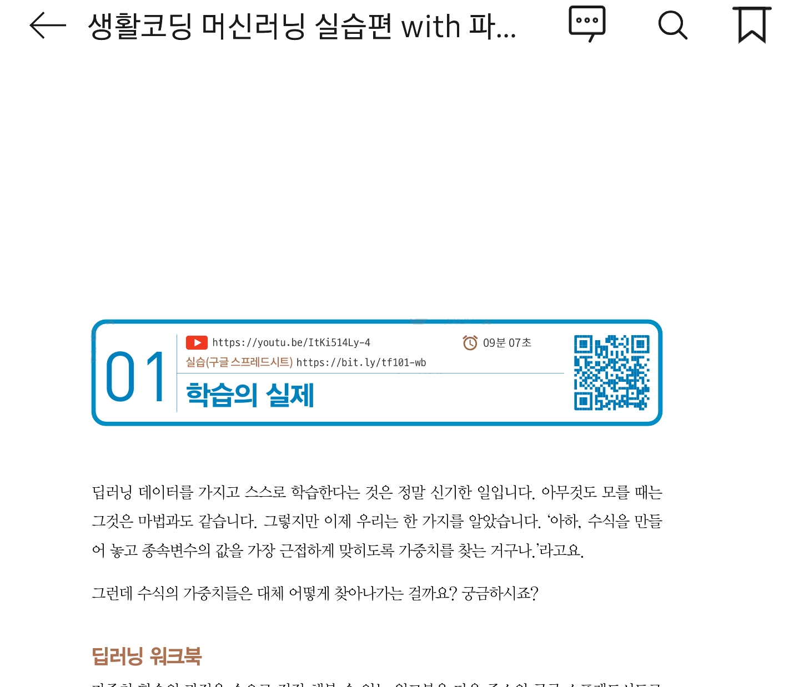
사증시 약급의 과성들 손으도 식섭 애슬 주 낫든 위그-을 나름 수소의 구름 스프데느시드도 만들어 두엇습니다.
https://bit.Iyl2DEBIPd 또는 https://bit.Iy/tf101-wb
답리딩 위크북 파일 수정 보기 삼입 서식 데이터 도구 보가기늄 도움말 스분 전데 다지다으로 소점엎습니다 10095 123 - 기본람 (Aria B I 늙 스 B 도I
= ! '|: - 7-
B25
읽대량
Loss 354 0.031683 dLoss dW dLoss prevLoss 133.4331 7801 1858.6497 next W next B dLoss 8-35669 3482 18586180
예측 (w은도-이예측 - 판대량 I(여측 - 판매량)2 41.871 129 0.0166-1 43.848 152 023104 45.825 030625 47.802 198) 039204 49.779 221 0488-1
조기값 생성기
0.o001
mse
031683
history
뒤=록 이름답= 초기값 생성기루 통해 나오는 감옥 복사하여 W와 B각유 늦어준다 결과인 W B 그리고 자등으로 생성되는 Loss 감들 특사하다 historyul 농는다 prevLoss 에 Loss 값들 특사하여 늦어들다 4.1 W값들 000u들 드한 갚으로 고적주고 dLoss 바의 값 논화틈 판잘하다 4.2 결과값 dLoss 바들 dLuss dW데 늘어르다 4-3 W규류 원래대로 고친다 5.1 B각들 0 0001튼 더한 라으로 고적주고 dLoss d의 굶들 관잘하다 5.2 의과값 dLoss d들 dLass dB데 늘어르다 5-3 B값물 원래대로 고친다 next ;, Fexl E의 값물 목사하여 W, E데 넣어주고 Lass루 확인하다 7 2본부터 다시 반롭하다
loss 2036 3634 8 3763 0 354 0.031683
2 17 1.977
그림 5.1 덥러님 위크북
86 01부 테서들로 101
2
9
32% (702/320p)
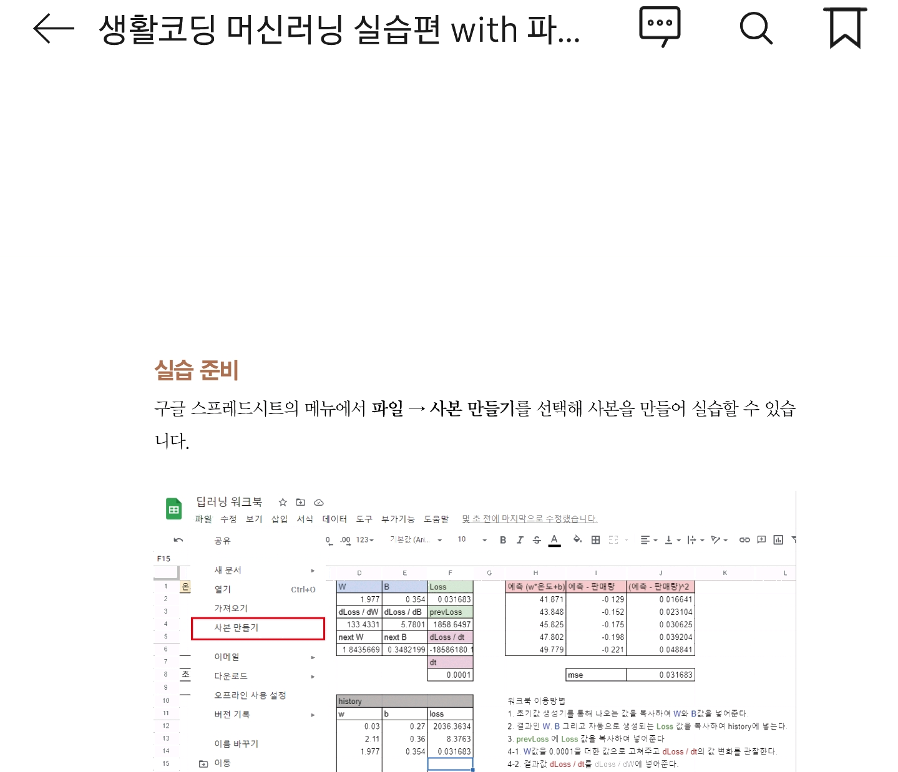
4-3 W처흘 원래대트 고진다 5-1 Ba올 0 0001올 더한 값으로 고처주고 dLoss d의 값올 관찰하다 5.2 결과값 dLoss d름 UL UE5 dB데I 넘어뚜다 5-3 B갑들 권라대로 고진다 next W, next E의I 각들 특사하다 W BC 늘어주고 Loss틀 흑인럽다 7. 2건트터 다시 반트렉다:
드라-이브에 바로가기 추가
휴지둘으로 이동
티어 게시
그림 5.2 덥러님 위크북 사본 만들기
위크북 이용 방법 덥러님 위크북 오른쪽 아래에 이용 방법올 적어 두없으니 먼저 살펴보시기 바람니다.
05장 학습
2
9
32% (703/320p)
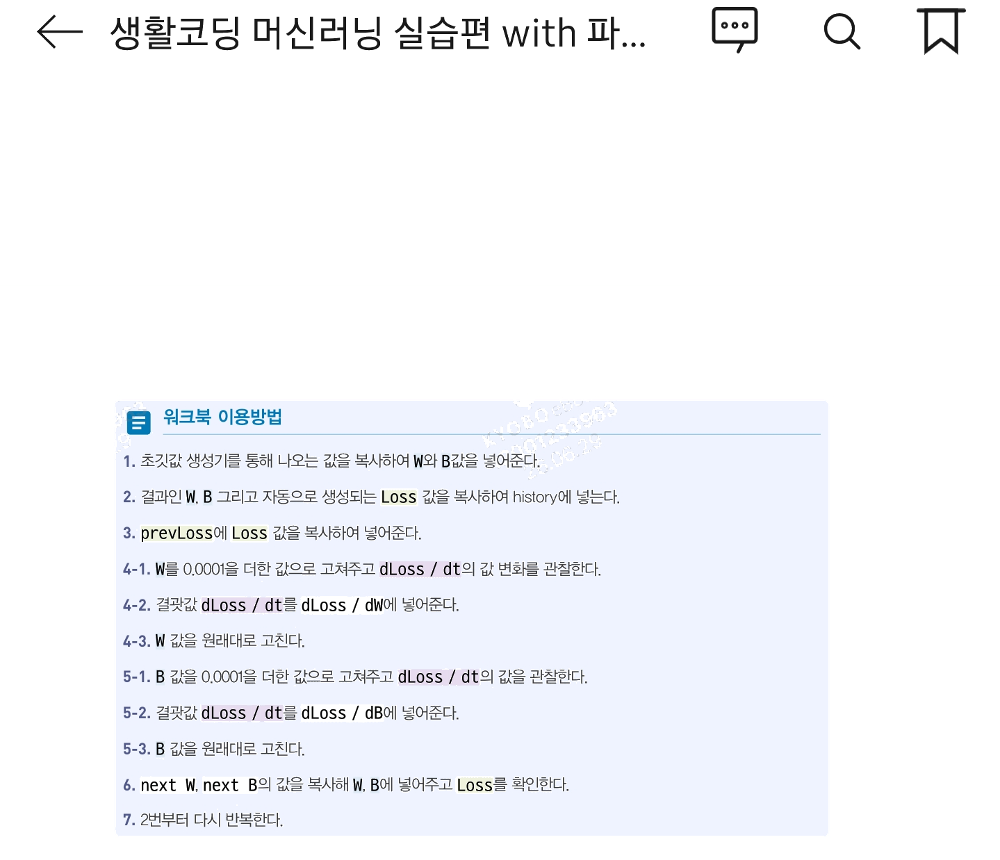
이제 설명올 해보켓습니다.
왼쪽 위의 데이터는 우리가 익히 보앗년 레모네이드 데이터조. 독립변수가 온도. 종속변수가 판매량인 데이터입니다.
온도
판대량 21 22 23 24 25
42 44 46 48 50
그림 5.3 덥러님 위크북의 레모네이드 데이터
다음으로 살펴볼 것은 히스토리(history) 입니다. 앞에서 modeL.fit 으로 학습올 시키면 화면에 출력되는 손실(1oss) 이 점차 떨어적는데. 그와 같은 내용이라고 보면 되니다. 위크북에서도 손실이 2036예서 8로. 다시 0으로 떨어지는 것올 볼 수 있습니다. 이 히스토리v 직접 만들 어 보켓습니다.
88 01부 테서들로 101
2
9
33% (704/320p)

크그 X 니 ' = 느
드느
근 - v니 벼 ' ~기 너 a " |
해주기 때문-입니다.
그런데 우리가 지금부터 배우려는 이유는 그 안을 들여다 보고 싶기 때문입니다. '꼭 배워야 한다. 배우지 않으면 큰일난다 라는 생각에 물두하지는 마시고 배율 필요가 전혀 없지만 궁 금하니까 조금 들여다 본다는 생각으로 이 수업올 따라와주시면 되켓습니다. 그럼 시작해 보 켓습니다.
초기화
히스토리틀 지율니다D12F18).
W와 B 값을 0으로 수정합니다D2 E2).
dLoss d와 dLoss dB 값을 지율니다D4 E4) .
이제 학습시길 준비가 끝나습니다.
05장 학습
2
9
33% (705/320p)
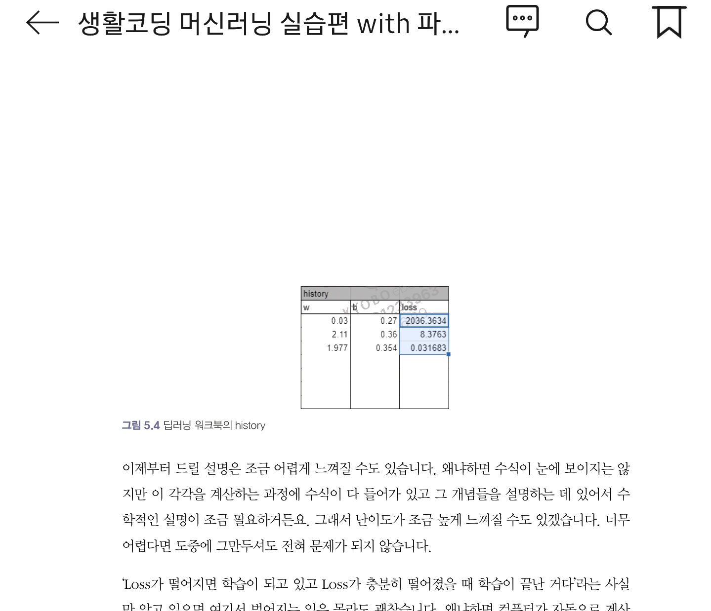
크그 X 니 ' = 느
드느
근 - v니 벼 ' ~기 너 a " |
해주기 때문-입니다.
그런데 우리가 지금부터 배우려는 이유는 그 안을 들여다 보고 싶기 때문입니다. '꼭 배워야 한다. 배우지 않으면 큰일난다 라는 생각에 물두하지는 마시고 배율 필요가 전혀 없지만 궁 금하니까 조금 들여다 본다는 생각으로 이 수업올 따라와주시면 되켓습니다. 그럼 시작해 보 켓습니다.
초기화
히스토리틀 지율니다D12F18).
W와 B 값을 0으로 수정합니다D2 E2).
dLoss d와 dLoss dB 값을 지율니다D4 E4) .
이제 학습시길 준비가 끝나습니다.
05장 학습
2
9
33% (705/320p)
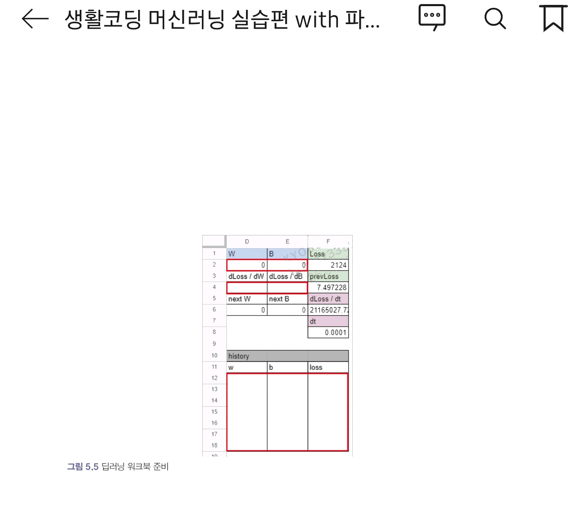
첫 번째 히스토리 위크북 이용 방법올 따라서 시작해보켓습니다.
Step 1. 초짓값 생성기률 통해 나오는 값을 복사하여 W와 B값을 넣어준다.
01. 초짓값 생성기틀 통해 나오는 값을 복사합니다A9) .'
초기각 생성기 0 12
그림 5,6 덥러님 위크북 첫 번째 히스토리 Step 1 - @ 초짓값 생성기의 값을 복사
02. 복사한 값을 W에 불여넣습니다D2). 이때 수식이 아니라 결관값만 사용할 것이므로 마우스 오른 쪽 버튼올 콜렉하고 값만 붙여넣기틀 선택합니다.
(워은이) 무작위 값이 생성되므로 실행할 때마다 숫자가 다르게 나용니다
90 01부 테서들로 101
2
9
33% (706/320p)
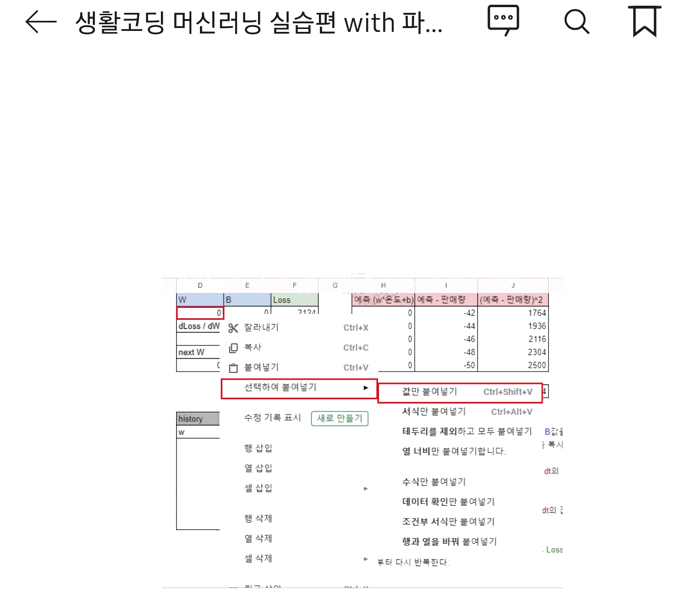
Loss 0.12 1876.7664 dLoss dw dLoss / dB [prevLoss 7,028832 next W Inext E dLoss 0.12 18697375.61
0.0001
그림 5.7 덥러님 위크북 첫 번째 히스토리 Step 1 - 복사한 초짓값을 W에I 불여넣기
03. 초짓값 생성기의 값을 다시 한번 복사합니다A9).
초기값 생성기 0. 21
그림 5.8 덥러님 위크북 첫 번째 히스토리 Step 1 - 초짓값 생성기의 값을 복사
(워은이) 새로운 무작위 값이 생성립니다
05장 학습
2
9
33% (707/320p)
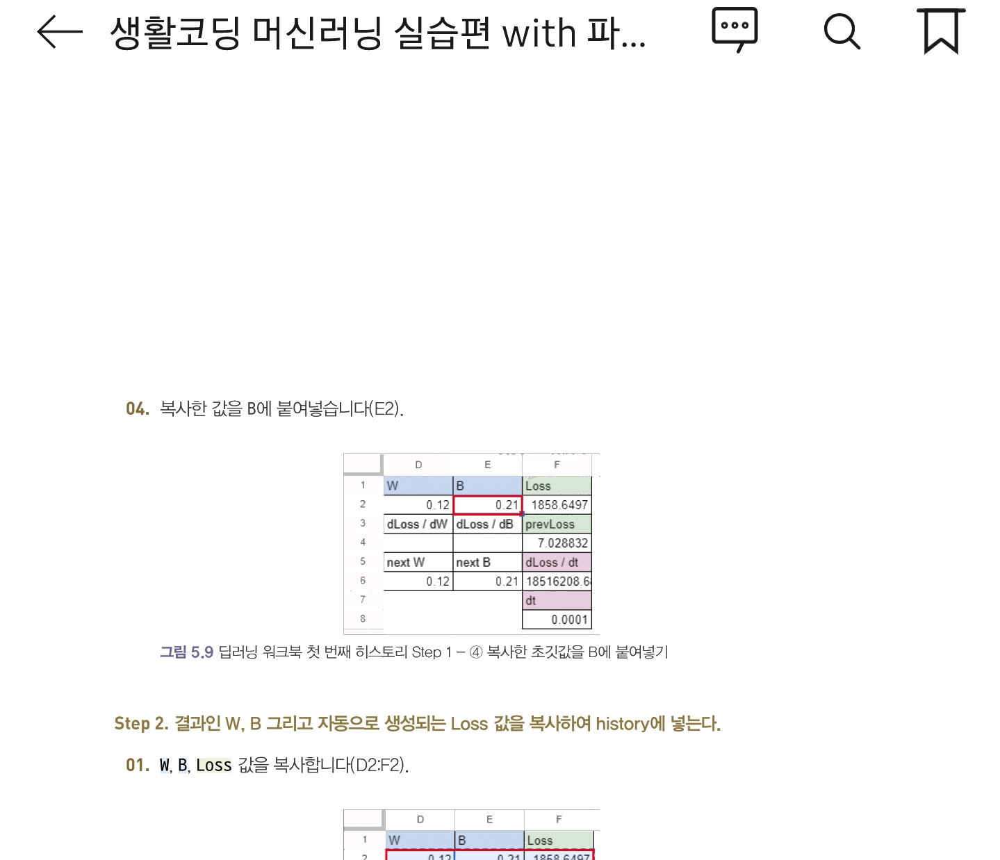
dLoss dW dLoss dB prevLoss 7,028832 next W next B dLossLdt 0.12 0.211 18516208
0.o001
그림 5,10 덥러님 위크북 첫 번째 히스토리 Step 2 - W, B, Loss 값을 복사
02 복사한 W, B, Loss 값을 히스토리에 붙여넣습니다Dt2F12).
loss 0.21 1858.6497
0.12
14
그림 5,11 덥러님 위크북 첫 번째 히스토리 Step 2 - 복사한 W, B, Loss 값을 history에l 붙여넣기
92 01부 테서들로 101
2
9
34% (708/320p)
dLoss dW dLoss dB IprevLoss 1858.6497 next W next B (dLoss 0.12 021
0.0001
그림 5.13 덥러딩 위크북 첫 번째 히스토리 Step 3
복사한 Loss 값을 prevLoss에l 붙여넣기
Loss 값
아직 학습이 끝나진 않은 상태로 랜덤하게 찾아진 모델에 의한 예측 결과가 예측 (w*온도+b) 열에 있습니다(H2H6). 그리고 이 결패값을 실제 판매량과 비교해 얼마나 차이가 나는지름 예측 판매량 설에 계산해두없습니다(216) 이 값을 제급해세J26) 평균을 번 것이 mselmean square error)라고 해서 우리가 Loss로 사용하 값입니다(J8)
예측 (w온도-이예측 판대량 | (예즉 판대량)2 2.73 -39,27 1542.1329 2.85 ~41.15 1693.3225 2.97 ~43.03 1851.5809 3.09 ~44.91 2016.9081 3.21 ~46,79 2189.3041
mse
1858.6497
그림 5.14 덥러님 위크북의 Loss 값 계산
05장 학습
2
9
34% (709/320p)
0001
mse
1859,6-9
그림 5,15 덥러님 위크북 첫 번째 히스토리 Step 41 - dt 값 확인
02. W틀 키워보켓습니다 0.0001만큼 키원더니 Loss 값이 변행조? 이 Loss 값이 1858.6예서 1858.4 로 작아켓습니다F2).
W (Loss 0.1201 0,21 1858.45101 dLoss dW O-oss dB prevLoss 1858.6497 next W next B dLoss 0.1201 0.21 -1986.8469
예측 (w은도+이예주 판대량 |(예측 판대량) 2 2,7321 -39,2679 1541.96797 2.8522 41.1478 1693.141445 2,9723 -23.0277 1851,382967 3,0924 ~44,9076 2016.692538 3.2125 ~46.7875 2189.070156
0.0001
IIIse
1858.451015
그림 5,16 답러딩 위크북 첫 번째 히스토리 Step 41 - W 값 변경
Step 4-2. 결패값 dLoss d틀 dLoss dW에I 넣어준다.
W틀 키원더니 손실이 작아져으무로 W가 다음번에는 커저야 합니다 이때 세 번째 행의 dLoss dt 값을 사용 합니다(F6) . 이것은 W틀 조금 키뒷올 때 손실이 변하는 손실의 미분 값입니다 그래서 Loss 값과 prevLoss 값의 차이틀 미분 값dt)으로 나뉘주면 이 값이 나흉니다
94 01부 테서들로 101
2
9
34% (770/320p)
Loss 0,1201 0,21 1858,.45101 dLoss dW|d_oss/ dB IprevLoss 1986,8469 1858,6497 next W Inext B dLoss d 2,1069469 0,21 -1986.8469
0.0001
그림 5.18 덥러님 위크북 첫 번째 히스토리 Step 4-2 - dLOss dW에I 붙여넣기
Step 4-3. W값을 원래대로 고친다.
W 값을 0.1207에서 0.12로 수정합니다(D2).
W
Loss 0 12 0.21 1858.6497 dLoss dW|dLoss/ dB IprevLoss 1986.8469 1858.6497 next W next B dLoss/ d 2.1068469 0.21
0,0001
그림 5.19 덥러딩 위크북 첫 번째 히스토리 Step 4-3 - W값올 원래대로 고치기
05장 학습
2
9
35% (777/320p)
01. dLoss dt 값을 복사합니다F6)
W
[Loss 0.12 0.2101 1858.64109 dLoss dW dLoss dB IprevLoss -1986,8469 1858.6497 next W next B dLossl dt 2.1068-69 0.2101 86.0599)
0.0001
그림 5,21 덥러님 위크북 첫 번째 히스토리 Step 5-2 - dLoss / dt 복사
02 복사한 값을 dLoss dB에I 붙여넣습니다E4). 0.21이원터 B 값이E2) next B에서는 0.29로 높 아젊습니다E6).
W
Loss 0.12 0.2101 1858.64109 dLoss dW dLoss dB IprevLoss -1986.8469 86.0599 1858.6497 next W next B dLoss 2.1068469 0.2961599 86.0599
0.0001
그림 5,22 답러님 위크북 첫 번째 히스토리 Step 5-2
dLoss dBOI 붙여넣기
96 01부 테서들로 101
2
9
35% (712/320p)
W Loss 2.1068469 0.2961599 60535805 dLoss dW dLoss dB -1986.8469 86.0599 next W next B dLoss 4.0936938 0.3822198/-18510443
예측 (W 은도-이예측 판대량 ((예즉 단대량) 2 44,5399448 2 5399448 6.451319587 46.6467917 2.6467917 7.005506303 48.7536386 2.7536386 7.582525539 50,8604855 28604855 8, 182377296 52.9673324 2.9673324 8.805061572
0.0001
mse
605358059
그림 5.24 덥러님 위크북 첫 번째 히스토리 Step 6
W, B에I 붙여넣기
Step 7. 2번부터 다시 반복하다.
두 번째 히스토리
Step 2. 결과인 W, B 그리고 자동으로 생성되는 Loss 값을 복사하여 history에l 넣논다
01. W 값과 B 값의 소수점 아래가 너무 길으로 소수점 아래 셋째 자리에서 잘라줌나다:
05장 학습
2
9
35% (713/320p)
0.0001
그림 5,26 덥러님 위크북 두 번째 히스토리 Step 2 - W와 B 값을 복사
03. 복사한 값을 히스토리의 두 번째 행에 붙여넣습니다
Loss 2,106 0.296 7.497228 dLoss dW dLoss / dB prevLoss -1986.8469 86.0599 1858.6497 next W next B dLoss 4.0928469 0.3820599/-18511524
0,0001
history
loss 0.21 1858.6497 0.296 7.497228
0.12 2 106
그림 5,27 덥러님 위크북 두 번째 히스토리 Step 2 - 복사한 W, B, Loss 값을 두 번째 히스토리에 붙여넣기
98 01부 테서들로 101
2
9
36% (774/320p)
'OL0sS OMOLOss OD IprevLoss 1986.8469 86,0599 7,497228 nextW next B dLoss 4.0928469 0.3820599
0.0001
그림 5.29 덥러딩 위크북 두 번째 히스토리 Step 3
prevLoss에l 붙여넣기
그럼 이제 이 다음 W와 B틀 찾기 위한 작업올 시작하면 되켓조?
Step 4-1. W값을 0.0001올 더한 값으로 고처주고 dLoss / d의 값 변화틀 관찰하다.
W틀 2.1061로 수정합니다
W Loss 2.1061 0,296 50985211 dLoss dW dLoss dB prevLoss -1986.8269 86,0599 7.497228 next W next B dLoss 4.0929469 0.3820599 126.2411 d 0.0001
그림 5.30 덥러님 위크북 두 번째 히스토리 Step 471 - W 값 변경
prevLoss보다 Loss 값이 커울습니다 W 값을 키월는데 Loss 값이 커울으니까 W 값은 커지면 안 되켓조? W 값이 작아져야 합니다
05장 학습
2
9
36% (775/320p)
dLoss dW dLoss dB prevLoss 126,2411 86.0599 7.497228 next W dLoss Hdt 1,9798589 126.2411
0.0001
그림 5,32 덥러님 위크북 두 번째 히스토리 Step 4-2 - dLoss dW에I 붙여넣기
W 값이 2.1이엎논데 next W 값은 1.97로 낮아켓습니다:
Step 4-3. W 값을 원래대로 고친다.
W 값을 2.1067에서 2.106으로 수정합니다
Loss 2106 0.296 7.497228 dLoss dW dLoss dB prevLoss 126.2411 86.0599 7.497228 next W next B dLoss 1.9797589 0.3820599
0.0001
그림 5,33 덥러님 위크북 두 번째 히스토리 Step 4-3 - W 값을 원래대로 고치기
100 01부 테서들로 101
2
9
36% (716/320p)
UI
나느0)
4 ( 비근 구 터니
W
1Bo 3PlLoss 2.106 0.2961 49777481 dLoss dw |dLoss/ dB prevLoss 126.2411 86.0599 7.497228 next W next B dLoss / dt 1,9797589 0,3821599 5.4681
0.oo01
그림 5.35 덥러님 위크북 두 번째 히스토리 Step 5-2 - dLoss / dt 값을 복사
02. 복사한 값을 dLoss dB에I 붙여넣습니다E4).
Loss 2.106 0.296 49777481 dLoss / dw dLoss / dB prevLoss 126.2411 5.4681 7.497228 next W nextB 1.9797589 0.2906319
0.0001
그림 5.36 덥러님 위크북 두 번째 히스토리 Step 5-2 - dLoss dt 값을 복사
05장 학습
2
9
37% (777/320p)
W
ILoss }";*- 2.106 0.296 7.497228 dLoss dW O-oss dB prevLoss 126.2411 5.4681 7.497228 next W next B dLoss 1.9797589 0.2905319
0.0001
그림 5,38 덥러님 위크북 두 번째 히스토리 Step 6 - next W, next B 복사
Loss 1.9797589 0.2905319 0,03144909 dLoss dW dLoss / dB 126,2411 5.4681 next W next B dLoss 1.8535178 0.2850638/-74657.7899
0.0001
그림 5,39 덥러님 위크북 두 번째 히스토리 Step 6 - W, B에I 붙여넣기
Step 7. 2번부터 다시 반복하다
102 01부 테서들로 101
2
9
37% (778/320p)
Loss 1.979 0.29 0.038131 dLoss dW dLoss dB prevLoss 126.2411 5.4681 7.497228 next W Inext B dLoss/ dt 8527589 0,2845319 -74590.97
0.ooo1
그림 5.41 덥러딩 위크북 세 번째 히스토리 Step 2 - W와 B 값을 복사
03. 복사한 값을 히스토리의 세 번째 행에 붙여넣습니다:
Loss 1.979 0.29 0.038131 dLoss dW dLoss dB prevLoss 126.2411 5.4681 7.497228 next W next B dLoss d 1.8527589 0.2845319 -74590.97
0.0001
history
loss 0,21 1858,6497 0.296 7.497228 0.29 0.038131
0.12 2.106 1.979
16
그림 5.42 덥러딩 위크북 세 번째 히스토리 Step 2 - 복사한 W, B Loss 값을 두 번째 히스토리에 불여넣기
05장 학습
2
9
37% (779/320p)
104 01부 테서들로 101
2
9
38% (720/320p)
부꽃ris)의 특징올 나타년 데이터지 살펴보고 원맛 인코당과 소프트백스에 대해 알아본 다음 부꽃 품종올 분류하는 머신러님 모델올 만들어넘니다
01 개요 02 _ 원화 인고딩 03 _ 소프트백스 04 _ 부꽃 품종 분류 실습
2
9
38% (727/320p)
첫룻은 어더 사시 흥뉴사 낫고 i류에 나다 옷의 크기사 나습니나: 넣어도 옷앞은 Fetal, 꽃밤 침은 Sepal이라고 합니다.
Petal
Sepal
Iris Versicolor 그림 6.1 부꽃의 품증과 부위별 명칭'
Iris Setosa
Iris Virginica
부꽃 데이터 부꽃의 꽃잎과 꽃받침의 크기름 관찰햇고 관찰한 결과틀 데이터로 정리햇습니다. 다음 주소 에서 데이터지 확인할 수 있습니다.
https: IwMW.datacamp com/ communityltutorialslmachine-learning-in-r
106 01부 테서들로 101
2
9
38% (722/320p)
4.9
0.2
setosa
3.2
0.2
setosa
4.6
0.2
setosa
5.0
3.6
0.2
setosa
5,4
0.4
setosa
4.6
0.3
setosa
6- -
그림 6.2 부꽃 데이터
앞선 수업에서 이미 배앗지만 다시 한번 확인해보시조.
회귀와 분류름 나누는 기준은 종속변수의 데이터 타입입니다.
종속변수가 양적 데이터인 경우에는 회귀 문제입니다. 회귀 알고리증올 사용합니다.
종속변수가 범주형 데이터인 경우에는 분류 문제입니다. 분류 알고리증올 사용합니다. 불꽃 분류는 종속변수가 범주형이니 분류 문제입니다.
06장 세 번째 답러님: 부꽃 돈
2
9
38% (723/320p)
F습니나: 우디늄 이런 과성흘 동애 넘터님 모임블 완성압니나: 과서의 데이터들 순미아고 모 델의 구조v 만들고 데이터로 모델올 학습하고 모델올 이용합니다.
독립변수 종속변수
온도 판매량
42
# 1.과거의 데이터지 준비합니다.
23
46
# 3 .데이터로 모델올 학습(FIT)합니다.
# 2. 모델의 구조v 만듬니다
15 원인
모델 판매항-온도X2
30 결과
# 4. 모델올 이용합니다
그림 6.4 덥러널의 과정
108 01부 테서들로 101
2
9
39% (724/320p)
14
15 # 3. 데이터로 모델올 학습 (fit)합니다 . 16 modeL.fit(독립, 종속, epochs=10oo) 17 18 # 4. 모델올 이용합니다 . 19 print("Predictions: modeL.predict(독립[0:5]))
데이터름 준비하는 부분은 조금 바뀌없습니다.
1~7행: 아이리스 파일로부터 데이터지 읽어들인 후에 독립변수와 종속변수름 나뉘는데요 그 사이에 코드가 한 줄 추가돼 있습니다.
9~13행: 모델올 구성하는 부분도 많이 바뀌없습니다. 먼저 독립변수의 개수가 4개이고 종속 변수에 개수가 3개입니다. 그리고 Dense의 activation 매개변수와 compile()의 Loss 매개변 수가 바뀌없습니다. 이러한 변경 부분이 바로 분류 모델로 만들어 주는 부분입니다. 회귀 문 제의 모델과 어떤 차이점이 엿는지 눈여겨보주세요
찬찬히 살펴보석나요? 그러면 함께 분류 문제 모델 속으로 들어가보켓습니다.
06장 세 번째 답러님: 부꽃 돈
2
9
39% (725/320p)
모델의 모형인 퍼센트론과 수식올 만들어 붙시다.
독립변수가 소개입니다. 입력증에서는 4개의 입력올 반습니다. 종속변수는 1개네요
X1
W1
W2
X2
W3
X3
W4
X4
그림 6.5 독립변수가 4개 종속변수가 i개인 퍼센트론
예측값올 하나 만들 것이고 이런 모양은 다음과 같은 수식으로 표현할 수 있젠습니다.
Y =u1 Xi+w2 K2+23 T3+2)4 X+b
(억은이) 강의 엉상의 표에 번째와 세 번째 품종이 잘못 들어 임어서 수정험습니다
170 01부 테서들로 101
2
9
39% (726/320p)
Seiosa
versicolor
이런 범주형 데이터는 수식에 사용할 수 있는 형태로 바뀌주는 과정올 거처야 합니다.
먼저 모든 범주률 칼럽으로 만들어중니다.
품종
setosa
virginica
versicolor
setosa
virginica
versicolor
setosa
versicolor
지금은 범주가 setosa , virginica , versicolor 이렇계 3가지가 있으므로 3개의 칼#이 생겨습 니다. 모든 값이 0으로 돼 있는 상태에서. 첫 번째 데이터는 setosa이니 다음과 같이 setosa 갈럽올 1로 바뀌중니다.
06장 세 번째 답러님: 부꽃 돈
2
9
40% (727/320p)
versicolor
나머지 값에 대해서도 마찬가지로 각 범주에 해당하는 칼끔의 값을 바뀌중니다.
품종
setosa
virginica
versicolor
setosa
virginica
versicolor
setosa
versicolor
이렇게 바꾸고 나니 데이터가 0 또는 1의 숫자 형태로 바뀌없습니다. 이렇계 범주형 데이터 틀 1과 0의 데이터로 바뀌주는 과정올 원/ 인코덩(one-hot encoding) 이라고 합니다. 답 러님 모델올 사용하기 위해서는 모든 범주형 변수름 원/ 인코당해야 합니다.
112 01부 테서들로 101
2
9
40% (728/320p)
아이리스 pd.get_dummies(아이리스)
꽃잎 길이 꽃잎 폭 꽃받침 길이 꽃받침 폭 품종setosa
품종 virginica
품종 versicolor
5.1
3.5
1.4
0,2
4.9
1.4
0.2
3.2
1.3
0,2
4.6
3.1
1.5
0,2
너무 멋지조? 감동적이지 않나요?
이제 독립변수와 종속변수만 분리하면 데이터의 준비가 끝날니다. 변형된 데이터지 가지고 모델올 구성해붙시다.
모델올 만드는 코드 독립변수가 4개네요. 입력충은 4개의 입력올 받아야 합니다. 원/ 인코덩이 되면서 종속변수 의 개수가 3개가 되워습니다. setosa 갈럽올 위해 출력올 하나 만들어야 합니다.
06장 세 번째 답러님: 부꽃 돈
2
9
40% (729/320p)
U .Keras Layer > . Uelise()) aC(LVd LLUI = S0V Lillax ) (^
model
tf.keras.models.Model(X, Y)
modeL.compile(Loss=' categorical_crossentropy
114 01부 테서들로 101
2
9
47% (730/320p)
내일 비가 오거나 오지 않거나 하는 분휴가 있습니다. 우리논 "내일 비가 올 확출은 30960*" 라고 표현 합니다
합격하거나 합격하지 않거나 하는 분류가 있습니다: "합격할 확물은 99960" 라고 표현하조
동전의 앞면이 나올 확출은 50960}" 라고 표현합니다
우리는 이렇게 0하에서 10096 사이의 확물값으로 분류름 표현합니다.
분류 모델이 분류름 추측하는 것도 사람이 표현하듯 확출로 표현해주면 종계조? 그렇게 만들 어주는 도구가 바로 시그모이드(Sigmoid) 와 소프트맥스(Softmax) 입니다. 여기서논 소프 트맥스만 사용합니다.
분류 예측
Sigmoid Softmax
309
999
5096
0% 1009
그림 6.7 확출값으로 분류름 표현
06장 세 번째 답러님: 부꽃 돈
2
9
47% (737/320p)
품종 setosa
품종 virginica
품종 versicolor
세토사가 0.7 . 버지니카가 0.3. 버시컬러가 0으로 결과틀 내면 세토사일 확출이 7096고 버지 니카일 확물은 3096라고 해석합니다.
품종 setosa
품종 virginica
품종 versicolor
0.7
03
0.2, 0.3. 0.5. 이렇게 결과가 나오면 세토사일 확출은 2096, 버지니카일 확물은 3096. 버시철 러일 확물은 5096라고 해석합니다.
품종 setosa
품종 virginica
품종 versicolor
0.2
03
0.5
앞에서 이 코드의 수식 표현이 다음과 같다고 설명드덧습니다.
116 01부 테서들로 101
2
9
47% (732/320p)
W2
y1
softmax(wixi + W2X2 + W3X3 + W4X4+ b)
W3
X3
y2
softmaxlwixi + W2X2 + W3X3 + W4X4+ b)
W4
y3
softmax(wixi + W2X2 + W3X3 + W4X4 + b)
그림 6.9 소프트백스 함수름 적용한 수식
활성화 함수 여기까지 윗으니 아주 조금만 더 유식해저 붙시다. 앞서 배월던 퍼센트론의 더 정확한 모양은 다음 그림과 같습니다.
06장 세 번째 답러님: 부꽃 돈
2
9
42% (733/320p)
도스드_ 아이번디더Idenuty) 남구가 셋앗나고 새성의일 T 셋싶티너나 이단 임구희 먹일 퍼센트론의 출력이 어떤 형태로 나가야 하느지 조절하는 역할올 하게 되고 우리가 지금 사 용한 2개의 함수 이외에 이런 용도로 사용되는 함수들이 더 있습니다. 이런 함수들올 활성화 (Activation) 함수라고 부륭니다.
크로스엔트로피 loss는 모델이 내농는 결과가 실제 정답과 차이가 있는가흘 알아보기 위한 지표입니다. loss 가 0이 되면 모든 정답올 맛히 모델이고 Loss틀 작게 만드는 것이 학습의 목표라고 말씀드럽 습니다. 학습이 제대로 되게 하려면 문제 유형에 맞게 손실올 지정해 주어야 합니다.
크로스엔트로피가 정확히 무엇인지 몰라도 괜찮습니다. 이 지식올 깊이 아는 것은 지금은 필 요하지 않습니다. 문제에 따라 Loss틀 다르게 사용해야 한다는 것올 알고 있으면 되직습니다. 분류에 사용하는 Loss는 크로스엔트로피이고 회귀에 사용하는 Loss는 mse인 거조
학습올 시키면 결과가 출력월 렌데요. 여기에 Loss로 나오는 값이 바로 크로스엔트로피름 통 해 계산된 차이 값을 이용해 만들어적다고 이해하면 덥니다. 그렇게 이해할 수 있는 것만으로 충분합니다.
118 01부 테서들로 101
2
9
42% (734/320p)
여기서 한 가지만 더 배우켓습니다. 분류 문제는 손실보다 사람이 보기에 더 종은 평가 지표 가 있는데요 바로 정확도(accuracy) 입니다:
compile 부분올 조정해주면 결과에서 정확도틀 함께 보여중니다.
modeL.compile(1oss=' categorical_crossentropy metrics='accuracy
실행결과:
Epoch 1/5 5/5
0s Zmslstep
Loss: 0.1584
accuracy: 0.9667
Epoch 2/5 5/5
Os Imslstep
Loss: 0.1587
accuracy 0.9733
Epoch 3/5
5/5
Os 2mslstep
Loss: 0.1579
accuracy 0.9667
Epoch 4/5 5/5
Os Imslstep
1oss: 0.1580
accuracy 0.9733
Epoch 5/5 5/5
0s Imslstep Loss: 0.1579
accuracy: 0.9667
06장 세 번째 답러님: 부꽃 돈
2
9
42% (735/320p)
120 01부 테서들로 101
2
9
43% (736/320p)
과거의 데이터지 준비 그다음으로 과거의 데이터지 준비하켓습니다.
파일경로 변수름 만들고. 아이리스라는 변수에 데이터률 로딩해서 담젯습니다. 그리고 아이 리스 변수의 값을 출력해보고요. head로 상위 5개 데이터름 출억해붙니다.
파일경로 https:llraw.githubusercontent.com/blackdewltensorfLowilmasterlcsvliris.csV 아이리스 pd.read_CSV(파일경로) 아이리스 head()
실행 결과
꽃잎길이 꽃잎쪽 꽃받침길이 꽃받침쪽 품종
5.1
3.5
1.4
0.2 setosa
4.9
3.0
1.4
0.2 setosa
4.7
32
1.3
0.2 setosa
4.6
3.1
1.5
0.2 setosa
5.0
3,6
1.4
0.2 setosa
06장 세 번째 답러님: 부꽃 돈
2
9
43% (737/320p)
5.0
3.6
1.4
0.2
대단하조? 여기서 행복올 맛보시기 바갑니다.
갈럽 이름 출력 아직 데이터의 준비가 끝나지 양앗조? 독립변수와 종속변수름 분류해야 합니다. 독립변수름 분리하려고 하니까 먼저 인코딩. columns틀 화면에 출력해주면 좋계조?
print(인코딩.columns)
실행 결과 Index([' 꽃잎길이 ' 꽃잎쪽' 꼴받침길이' , 꼴발침쪽' 품종_virginica' ], dtype='object')
품종_setosa
품종_versicolor
122 01부 테서들로 101
2
9
43% (738/320p)
Input 레이어 모양은 4개입니다
출력증의 모양은 3개이므로 3올 씨주고 지금은 분류 문제름 푸는 것이므로 activation올 softmax로 넣어중니다.
그리고 모델올 만들면 되직습니다. loss틀 categorical_crossentropy로 지정합니다. (오타 가 나기 쉬우니 조심하세요 )
그리고 정확도(accuracy) 틀 지표로 지정하면 사람이 보기에 좋습니다.
X
tfkeras.Layers.Input(shape-[4]) tf.keras.layers.Dense(3, activation=' softmax' )(X) model tf.keras.models.Model(X, Y) modeL.compile(Loss=' categorical_crossentropy metrics=' accuracy
데이터로 모델올 학습 자 modeL.fit으로 학습올 시키켓습니다. epochs는 10으로 지정해서 일단 10번만 돌려보켓습 나다.
06장 세 번째 답러님: 부꽃 돈
2
9
43% (739/320p)
Epoch 8/10 5/5
Os 2mslstep Loss: 4.5256
accuracy 0.3333
Epoch 9/10
5/5
Os 2mslstep
Loss: 4.4424
accuracy: 0.3333
Epoch 10/10
5/5 Os Zmslstep Loss: 4.3593
accuracy 0.3333
10번 학습햇는데 정확도(accuracy) 눈 그대로이지만 손실(Loss) 은 계속 떨어지고 있습니다. 학습이 되고 있는지 아난지는 accuracy보다는 Loss와 관련 있습니다. 지금은 Loss가 떨어지 고 있으므로 학습이 되고 있는 것입니다. 이와 같이. 내가 원하는 모델인지 아난지름 판단활 때는 accuracy틀. 학습이 진행 중인지틀 알고 싶올 때는 Loss틀 보면 덥니다
이제 좀 많이 학습해보조 . 학습올 100번 해보켓습니다.
modeL.fit(독립 , 종속, epochs=1oo)
실행 결과
(생락) 5/5
Os Zmslstep loss: 0.7361
accuracy: 0.7733
124 01부 테서들로 101
2
9
44%0 (740/320p)
나 U9
5/5
Os 3mslstep
Loss: 0.6939
accuracy: 0.7933
Epoch 98/100 5/5
Os 3mslstep
Loss: 0.6889
accuracy: 0.8467
Epoch 99/100 5/5
0s Zmslstep
Loss: 0.6858
accuracy: 0.8133
Epoch 100/100 5/5 0s 3mslstep Loss: 0.6809
accuracy 0.8269
학습이 되면서 손실이 떨어지고 정화도가 점점 오르는 것올 볼 수 있습니다:
한 번 더 해불까요? 데이터가 쉬운 편이라 9896까지는 금방 올라걀 겁니다.
modeL.fit(독립 , 종속, epochs=1oo)
실행 결과
(생락) 5/5 [==
0s 2mslstep Loss: 0.4560
accuracy: 0.9333
Epoch 89/100 5/5 [=====
0s 2mslstep
Loss: 0.4560
accuracy: 0.9467
06장 세 번째 답러님: 부꽃 돈
2
9
44%0 (747/320p)
나 U9
그이
5/5
Os 2mslstep
Loss: 0.4431
accuracy: 0.9400
Epoch 99/100 5/5
Os Zmslstep
Loss: 0.4431
accuracy: 0.9467
Epoch 100/100 5/5
Os 2mslstep
Loss: 0.4405
accuracy: 0.9400
더 학습올 하면 더 오v 테니까 여러분도 학습올 시켜 보시기 바갑니다.
모델올 이용
처음 5개의 데이터로 예측 이제 모델올 이용해붙시다. 모든 데이터들 다 넣어서 체크하긴 어려우므로 처음 5개의 데이 터로 예측올 해붙시다.
print(modeL predict (독립[0:5]))
126 01부 테서들로 101
2
9
44%6 (142/320p)
1
1 1 1
2
3
네. 이렇게 5개 전부 다 세토사없네요.
마지막 5개의 데이터로 예측
다른 분류도 잘 예측하느지 확인하기 위해 맨 믿에 있는 5개록 출력해 보완습니다. 맨 믿에 있는 5개록 출력하는 방법은 슬라이심이라고 말씀드껴는데. 자세한 사랑이 궁금하다면 추가 로 공부하시면 되직습니다. 슬라이성올 이용하면 -5번째부터 끝까지름 다음과 같이 표현합 니다.
print(modeL.predict(독립[-5:]))
실행 결과
array([[0.01488435, 0.2753571 0.7097586 ], [0.01683157, 0.31215316, 0.67101526],
06장 세 번째 답러님: 부꽃 돈
2
9
45% (143/320p)
학습한 가중치 학습한 가중치들올 출억해보켓습니다. get_weights틀 하면 가중치가 보인다고 햇조?
print(modeL.get_weights())
실행 결과 [array(L[ 0.20331924, 0.27181062, 0.41869685] , [ 1.4920163 0.5374154 -0.2140721 ] [-0.38437232, 0.31811464, 0.40649754] [-1.0823697 -0.3150506 0.88712615]], dtype-float32) , array([ 0.476409 0.38131183, -0.62610483], dtype-float32) ]
수치름 보면 이겉 이제 테이블. 즉 표의 형태라고 생각하서도 좋습니다. 2차원 형태니까 가로 가 로우고 세로가 칼럽입니다.
128 01부 테서들로 101
2
9
45% (144/320p)
성리
종속변수가 범주형일 때 분류 모델올 만드는 법올 배윗고 이런 범주형 데이터름 학습시키기 위해 수치하으로 변형하는 방법도 배웃습니다.
오늘도 수고하석습니다
전체 코드
코드 practice4-iris ipynb
# 라이브러리 사용 import tensorflow as tf import pandas as pd
1.과거의 데이터 준비합니다 . 파일경로 'https:llraw.githubusercontent.comlblackdewltensorflowilmasterlcsvliris.csV 아이리스 pd.read_csV(파일경로) 아이리스.head()
원맛 인코딩 아이리스 pd. get dummies(아이리스)
06장 세 번째 답러님: 부꽃 돈
2
9
45% (145/320p)
그근근 버이 터니니
# 맨 처음 데이터 5개 print(modeL.predict(독립[:5])) print(종속[:5])
# 맨 마지막 데이터 5개 print(modeLpredict(독립[-5:]) ) print(종속[-5:])
# weights & bias 출력 print(model. get weights())
130 01부 테서들로 101
2
9
46% (746/320p)
허든 레이어와 멀티 레이어의 구조v 이해하고 하든 레이어름 추가한 멀리 레이어 인공 신경망 모델올 완성해 붐니다
01 하든 레이어
02 하듣 레이어 실습
2
9
46% (147/320p)
어너눈은 이미 소은 신청방을 난들기 | 위안 모든 순미들 나섯근니나: 신청방을 싶세 난드는 신 의외로 단순합니다. 기존의 퍼센트론올 여러 개 사용해 연결만 하면 되는데요. 입력과 결과 사이에 퍼센트론들올 추가해주면 끝입니다.
입력 테이어(Input Layer) 와 출력 레이어(Output Layer) 사이에 추가한 부분올 히든 레이 어(Hidden Layer) 라고 부큼니다. 다음 그림은 입력과 출력 사이에 하나의 충을 쌓아서 구성 한 모델입니다. 이 하든 레이어는 5개의 노드틀 가지고 있습니다.
결과틀 만들기 위해서는 하든 레이어의 모든 값을 입력으로 하는 하나의 퍼센트론이 필요합 니다. 그리고 하든 레이어의 첫 번째 결과루 만들기 위해서는 역시나 하나의 퍼센트론이 필요 하켓조. 총 5개의 노드가 있으니 5개의 퍼센트론이 필요합니다.
132 01부 테서들로 101
2
9
46% (748/320p)
보스터 십값 데이터들 상상해 보시면 F젯습니다. 관즉지논 종 506개엎습니다. 녹립변수로 13개의 칼럽올 가진 데이터지 입력으로 하고 있엇고 종속변수로 1개의 칼럽올 정답으로 가지 고 있조.
같은 표현올 가지고 중간 레이어름 바라보면 하든 레이어에서 나타날 데이터름 추론해 볼 수 있습니다. 5개의 갈럽올 가진 데이터라고요
(506,5)
X
W너
h
X2
W오
W1
W3
h2
W2
X3
W12
W3
h3
W4
W13
h4
Ws
X12
hs
X13
(506,13)
(506,1)
Input Layer
Hidden Layer
Ouput Layer
그림 7,2 데이터의 관점
07장 네 번째 덥러님: 멀리 레이어 인존
2
9
47%0 (749/320p)
그림 7,3 히든 레이어에서 결과루 출력하는 부분
입력 쪽에서 하든 레이어름 만드는 부분올 떼어서 관찰해보면 13개의 입력올 받아 5개의 출 력올 만드는 모델이라고 할 수 있습니다
X1
WA
h
X2
W2
W3
h2
X3
W12
h3
W13
h4
X12
hs
X13
(506,13)
Input Layer
Hidden Layer
그림 7,4 입력 쪽에서 히든 레이어들 만드는 부분
134 01부 테서들로 101
2
9
47% (750/320p)
model
tf.keras.models.Model(X, Y) modeL.compile(Loss='mse )
한 가지 주의할 점으로. 마지막 출력올 만들 때 X틀 넣는 것이 아니라 마지막 하든 레이어에 서 만들어진 H틀 넣어야 합니다. 위의 코드는 방금 그림으로 보신 모델과 같이 중간 결과지 5 개 내농는 레이어름 하나 추가한 코드입니다.
하든 레이어의 활성화 함수로는 swish틀 사용햇습니다. 다른 활성화 함수들올 사용할 수도 있지만 swish눈 최근에 발표된 성능이 좋은 활성화 함수이니 당분간 이것만 사용하서도 종계 습니다.
또한 'swish' 대신 하든 레이어 activation 함수로 사용할 수 있는 여러 함수들이 있으니 한 번 검색해서 확인해 볼 것올 권장드럽니다. 그 함수들 중 가장 유명하 'relu 라는 이름도 함께 기억해 두시면 좋계습니다.
07장 네 번째 덥러님: 멀리 레이어 인존
2
9
47% (757/320p)
똑한 모델이 덥니다.
이제 덥러님 모델올 만들 만반의 준비가 끝러습니다. 실제로 덥러님 모델올 만들어보켓습 니다.
136 01부 테서들로 101
2
9
48% (752/320p)
라이브러리 로딩
l서플로와 판다스 라이브러리블 로딩합니다.
import tensorflow as tf import pandas as pd
과거의 데이터지 준비 보스템 집값 예측 데이터지 로딩하고. 독립변수와 종속변수로 분리합니다.
파일경로 https:llraw.githubusercontent.com/blackdewltensorfLowilmasterlcsvlboston.csv 보스템 pd.read_CSV(파일경로)
독립
보스템[[ ' crim zn indus chas nox rm' age dis rad' tax ptratio' b Lstat']] 종속 보스템[[ 'medv' ]] print(독립.shape, 종속.shape)
07장 네 번째 덥러님: 멀리 레이어 인존
2
9
48% (753/320p)
moae Lcompiie(Loss= mse )
이제 모델올 멀티 레이어 구조로 바뀌 보켓습니다. 10개의 노드틀 만들고 활성화 함수름 Swish ' 로 지정하고 X 인뜻올 받아서 거틀 만듬니다. Y가 거틀 입력으로 받게 바뀌주는 것도 잊지 마세요
# 변경 후 X = tf.keras.layers.Input(shape-[13]) H = tf,keras.layers.Dense(10, activation-=' swish ' )(X) tf.keras.layers.Dense(1) (H) model tf.keras.models.Model(X; Y) modeL.compile(loss= mse' )
학습
드디어 학습올 시길 차례입니다. 100번 학습하켓습니다. 인공 신경망 10개 층 10개 노드 하나의 충올 추가한 모델입니다.
138 01부 테서들로 101
2
9
48% (754/320p)
16/16 [=
Os 2mslstep
loss: 44.3882
Epoch 98/100
16/16
0s 2mslstep 1oss: 45.6711
Epoch 99/100 16/16
Os 2mslstep
1oss 45.6094
Epoch 100/100 16/16 0s 2mslstep 1oss 45.5657
100번올 돌싶는데 Loss가 45까지 떨어적네요.
이번에는 출력 없이 1000번 학습시권 후에 10번 더 학습하면서 출력해 보제습니다.
modeL.fit(독립 , 종속, epochs=1000, verbose-o) modeL.fit(독립 , 종속, epochs=1o)
실행 결과
Epoch 1/10 16/16 ==
0s 2mslstep
1oss 24.6487
Epoch 2/10
16/16
0s 2mslstep 1oss 23.6668
07장 네 번째 덥러님: 멀리 레이어 인존
2
9
48% (755/320p)
(C-u
느UW Py (o
9)
(9
느9()
Lu )
UP
이번에는 23 정도까지 떨어져습니다.
한 번 더 실행해 보켓습니다. 멀리 레이어름 쌍기 전에는 25 정도가 한계엎는데 . 지금은 어디 까지 내려가능지. 조금 더 학습올 할 수 있는지 확인해보려고 합니다. verbose 값을 @이 아난 1로 설정(또는 verbose 돕선올 생각) 해서 Loss가 잘 떨어지논지 확인해바도 좋습니다
modeL.fit(독립 , 종속, epochs=1009, verbose=0) modeL.fit(독립 , 종속, epochs=1o)
실행 결과
Epoch 1/10
16/16
Os Zmslstep
1oss: 23.3559
Epoch 2/10 16/16
Os 2mslstep
1oss: 23.4597
Epoch 3/10
16/16
0s 2mslstep 1oss: 23.1843
Epoch 4/10
16/16
0s Zmslstep Loss: 24.3721
Epoch 5/10
140 01부 테서들로 101
2
9
49% (756/320p)

(C-u
느UW Py (o
9)
(9
느9()
Lu )
UP
이번에는 23 정도까지 떨어져습니다.
한 번 더 실행해 보켓습니다. 멀리 레이어름 쌍기 전에는 25 정도가 한계엎는데 . 지금은 어디 까지 내려가능지. 조금 더 학습올 할 수 있는지 확인해보려고 합니다. verbose 값을 @이 아난 1로 설정(또는 verbose 돕선올 생각) 해서 Loss가 잘 떨어지논지 확인해바도 좋습니다
modeL.fit(독립 , 종속, epochs=1009, verbose=0) modeL.fit(독립 , 종속, epochs=1o)
실행 결과
Epoch 1/10
16/16
Os Zmslstep
1oss: 23.3559
Epoch 2/10 16/16
Os 2mslstep
1oss: 23.4597
Epoch 3/10
16/16
0s 2mslstep 1oss: 23.1843
Epoch 4/10
16/16
0s Zmslstep Loss: 24.3721
Epoch 5/10
140 01부 테서들로 101
2
9
49% (756/320p)
프크 7 소 인
멀티 레이어 학습 모델이 올바르게 만들어적느지 summary로 확인해보면 중습니다.
modeL.summary()
실행 결과
Model: 'model
Layer (type)
Output Shape
Param
input_3 (InputLayer)
[(None, 13) ]
dense_2 (Dense)
(None, 10)
140
dense 3 (Dense)
(None, 1)
11
Total params 151 Trainable params 151 Non-trainable params
07장 네 번째 덥러님: 멀리 레이어 인존
2
9
49% (757/320p)
print(modeL.predict(독립[:5]) ) print(종속[:5])
실행 결과
[[29.367575] [22.595165] [31.582932] [35.79449 [34.561707]] medv 24.0 21.6
2 34.7
33.4
36.2
24름 29로 예측햇고. 21올 22로 예측햇고. 34름 31로 예측햇고 33올 35로 예측햇고. 36올 34로 예측햇습니다. 아주 잘 맞히고 있네요.
(역은이) summary틀 실행한 출력 결과에서 Layer 이름에 붙는 숫자는 예시와 다른 수 있습니다
142 01부 테서들로 101
2
9
49% (758/320p)
print(독립.shape, 종속.shape)
실행 결과
(150, 4) (150, 3)
모델의 구조 만들기 이전에 만든 모델은 다음과 같이 4개의 입력올 밭고 3개의 출력올 만드는 구조엿습니다.
X
tf.keras.layers.Input(shape-[4]) tf.keras.layers.Dense(3, activation=' softmax' )(X) model tf.keras.models Model(X, Y) modeL.compile(oss=' categorical_crossentropy metrics='accuracy' )
여기에 하든 레이어름 추가합니다. 활성화 함수는 'swish"로 하고 X틀 입력반고 출력증의 입력은 H로 입력올 바뀌 줍니다. 이번에는 8개의 노드틀 가지는 히든 레이어 3개름 쌓아보켓 습니다.
07장 네 번째 덥러님: 멀리 레이어 인존
2
9
50% (759/320p)
Epoch 1/10 5/5
Os 3mslstep
Loss: 1.3632
accuracy= 0.3267
Epoch 2/10 5/5
Os 3mslstep
Loss: 1.2065
accuracy: 0.3133
Epoch 3/10
5/5
Os 2mslstep
Loss: 1.1349
accuracy 0.3200
Epoch 4/10
5/5
Os 2ms Istep
Loss: 1.0956
accuracy 0.3200
Epoch 5/10
5/5
Os 3mslstep
Loss: 1.0714
accuracy 0.3133
Epoch 6/10
5/5
0s 2mslstep Loss: 1.0581
accuracy 0.4200
Epoch 7/10
5/5
Os 2mslstep
loss: 1.0446 accuracy 0.4000
Epoch 8/10
5/5
0s 2mslstep Loss: 1.0373
accuracy 0.4733
Epoch 9/10
5/5
Os Zmslstep
loss: 1.0280
accuracy 0.5267
Epoch 10/10
5/5 Os Zmslstep Loss: 1.0156
accuracy: 0.4267
144 01부 테서들로 101
2
9
50% (760/320p)
기 )
US 4115/ SLep
L0S
1400
accur acy
U . 9)3)
Epoch 95/100 5/5 [===
0s 2mslstep
Loss: 0.1161
accuracy 0.9600
Epoch 96/100 5/5
0s 2mslstep
1oss: 0.1209
accuracy 0.9600
Epoch 97/100 5/5
0s 2mslstep Loss: 0.1180
accuracy: 0.9600
Epoch 98/100 5/5
0s 2mslstep Loss: 0.1177
accuracy: 0.9533
Epoch 99/100
5/5
0s Zmslstep
Loss: 0.1111
accuracy: 0.9600
Epoch 100/100
5/5 0s 2mslstep Loss: 0.1184 ctensorflow python keras.callbacks.aistory at Ox7fcea5f74128>
accuracy: 0.9600
출력올 해보니 9696까지 학습이 되는 겉 확인할 수 있습니다.
출력 내용올 지우고 싶올 맨 옆의 X 버든올 클렉하면 출력이 지위집니다.
07장 네 번째 덥러님: 멀리 레이어 인존
2
9
50% (767/320p)
print(modeL.predict(독립[:5])) print(종속[:5])
실행 결과 [[9.9980110e-01 2.9277263e-07 1.9867114e-04] [9.9975640e-01 1.9786096e-06 2.4160542e-04] [9.9972349e-01 9.2671240e-07 2.7551543e-04] [9.9969447e-01 2.4259684e-06 3.0322323e-04] [9.9977976e-01 2.4458930e-07 2.2001288e-04]] 품종_setosa 품종_versicolor 품종_virginica
2
1
3
1
첫 번째 줄의 9.9980110e-@1은 9.9980110 X10 '이프로 거의 1에 가까운 숫자로 예측한 것 이고 2.9277263e-07은 2.9277263 x10 이므로 거의 (에 가까운 숫자로 수렵된 것올 볼 수 있습니다. 전에 학습햇다 모델보다 결과가 많이 향상쾌음올 확인할 수 있습니다:
146 01부 테서들로 101
2
9
57% (762/320p)
07장 네 번째 덥러님: 멀리 레이어 인존
2
9
57% (763/320p)
친설
도스년L "VCuV
print(독립 . shape, 종속.shape)
# 2. 모델의 구조v 만듬니다 . X tf keras.layers.Input(shape-[13]) H tf keras.layers.Dense(1o, activation=' swish ' )(X) tf keras.layers.Dense(1) (H) model tf.keras.models.Model(X, Y) modeL.compile(Loss='mse )
#모델 구조 확인 modeL.summary()
# 3. 데이터로 모델올 학습 (fit)합니다 . modeL.fit(독립 , 종속, epochs=1oo)
# 4. 모델올 이용합니다 . print(modeLpredict(독립[:5])) print(종속[:5])
모델의 수식 확인 print(modeL.get_weights())
148 01부 테서들로 101
2
9
57% (764/320p)
Keras. Layers. uense(o) aCLLvatLon= SW_SI ) (h)
H
tf.keras.layers.Dense(8, activation="swish )(H) tf.keras.layers.Dense(3, activation=' softmax' ) (H) model tf.keras.models.Model(X, Y) modeL.compile(ioss=' categorical_crossentropy metrics='accuracy' )
# 모델 구조 확인 modeL.summary()
# 3. 데이터로 모델올 학습 (fit)합니다 . modeL.fit(독립, 종속, epochs=1oo)
# 4. 모델올 이용합니다 . print(modeL.predict(독립[:5])) print(종속[:5])
07장 네 번째 덥러님: 멀리 레이어 인존
2
9
52% (765/320p)
01 데이터지 위한 팀
2
9
52% (766/320p)
먼저 판다스에서 제공하는 함수들 사용하기 위해 판다스 라이브러리들 임포트합니다.
import pandas as pd
이번 실습올 위해 기존의 iris.csv 데이터지 변조한 iris2.csV 데이터름 준비해두없습니다. 이 데이터름 읽어 들이면 앞에서 설명한 두 가지 문제가 발생합니다.
원맛 인코덩이 되지 안는 문제 파일경로의 데이터지 아이리스로 읽어 들입니다. 그리고 아이리스.head로 읽어보켓습니다. 지난번 데이터는 품종이 setosa 같은 명목형 데이터엿는데. 이 데이터에서는 setosa눈 @으 로 virginica논 1로; versicolor는 2로. 이렇계 품종이 숫자 데이터로 바민 것올 볼 수 있습 니다.
파일경로 https: 'raw.githubusercontent.com/blackdewltensorfLowilmasterlcsvliris2.csV 아이리스 pd.read_CSV(파일경로) 아이리스 head()
08장 데이터지
2
9
52% (767/320p)
실행 결과
꽃잎길이 꽃잎쪽 꽃받침길이 꽃발침쪽 품종
5,1
3.5
1.4
0.2
4.9
3.0
1.4
0.2
3.2
1.3
4,6
3.1
1.5
0.2
5,0
3,6
1.4
0.2
그래서 직접 범주형으로 바뀌주는 작업올 해쥐야 하는데. 그 전에 갈럽들의 데이터 타입이 어 넣계 돼 있냐 체크하는 과정이 필요합니다. dtypes틀 호출해서 출력해보면 이렇계 각 갈럽올 어떤 타입으로 읽어 들엿는지 나흉니다.
print(아이리스.dtypes)
실행 결과
꼴잎길이 fLoat64 꽃잎쪽 float64 꼴받침길이 fLoat64 꼴발침쪽 fLoat64 품종 int64 dtype: object
152 01부 테서들로 101
2
9
53% (768/320p)
4.7
꽃잎쪽 fLoat64 꼴받침길이 fLoat64 꼴발침쪽 float64 품종 category dtype: object
이겉 한 다음에 다시 원맛 인코딩올 해서 출럭해보면 이제는 우리가 원하는 형태로 품종_0, 품종_1, 품종_2와 같이 원/ 인코당원 결과틀 받을 수가 있습니다.
인코딩 pd.get_dummies(아이리스) 인코딩 .head()
실행 결과
꽃잎길이 꽃잎쪽 꽃받침길이 꽃발침쪽 품종_0 품종_1 품종_2
5.1
3.5
1.4
0.2
4.9
3.0
1.4
4.7
3.2
1.3
4,6
3.1
1.5
5.0
3.6
1.4
0.2
08장 데이터지
2
9
53% (769/320p)
dtype= int64
꼴잎쪽에 NA가 있네요. 제가 데이터름 만들 때 맨 마지막 열에 NA틀 넣어뒷기 때문입니다.
tail로 확인해보면 맨 마지막 열의 꽃잎쪽이 숫자가 아니라 NaN으로 나오는데. 실제로 데이 터에서 그곳의 값을 비위 두없습니다. 이처럼 반 값은 0이 아니라 NaN(Not Number) 으로 읽어 들입니다.
아이리스.tail()
실행 결과
꽃잎길이 꽃잎쪽 꽃받침길이 꽃받침쪽 품종 145 6.7 3.0 5.2 2.3
146
2.5
5.0
1.9
147
6.5
3.0
5.2
2.0
148
6,2
3,4
5.4
2.3
149
5,9
NaN
5.1
1.8
154 01부 테서들로 101
2
9
53% (770/320p)
fiUIna틀 사용해 Nal올 mean으로 채우고. 이렇계 Nal올 채운 값을 다시 꼴잎쪽에 넣어중니다. 마지막 열흘 다시 출력해 보면 꼴잎쪽이 평균값으로 채위진 것올 확인할 수 있습니다.
아이리스[' 꽃잎쪽' ] = 아이리스[' 꽃잎쪽' ].filIna(mean) 아이리스.tail()
실행 결과
꽃잎길이
꽃잎쪽 꼴받침길이 꽃발침쪽 품종 6.7 3.000000 5.2 23
145
146
6,3 2.500000
5,0
1.9
147
3.000000
5.2
2.0
148
6.2 3.400000
5.4
23
149
5,9 3.054362
5,1
1.8
이렇계 두 가지 방법에만 익숙해지면 이제 웬만한 데이터들은 처리할 수 있을 것입니다. 그럼 이번 수업은 여기서 마치켓습니다. 수고하석습니다.
08장 데이터지
2
9
53% (771/320p)
느J다'
# 품종 타입올 범주형으로 바뀌준다 . 아이리스[ ' 품종' ] 아이리스[' 품종' ].astype(' category' ) print(아이리스.dtypes)
카테고리 타입의 변수만 원화 인코딩 인코딩 pd.get_dummies(아이리스) 인코딩.head()
# NA 값을 체크해 붙시다 . 아이리스.isna().sum() 아이리스.tail()
# NA 값에 꽃잎쪽 평균값올 넣어주는 방법 mean 아이리스[ ' 꼴잎쪽 ' ].mean() print(mean) 아이리스[ ' 꽃잎쪽 ' ] 아이리스[' 꽃잎쪽 ' ].fillna(mean) 아이리스.tail()
156 01부 테서들로 101
2
9
54% (772/320p)
01 _ 모델올 위한 팀
2
9
54% (773/320p)
일어나진 않앉습니다. 여러 번 학습올 시켜도 손실이 떨어지는 양이 생각만큼 만족스럽지 양 앞습니다.
이때 배치 노멀라이제이선(batch normalization) 으로 학습올 좀 더 빠르게 잘 시길 수 있습 니다. 그 사용법올 알아보켓습니다.
H
tf keras.layers.Dense(8, activation=' swish' )(X)
코드틀 조금 다르게 쓸 수 있습니다. 아래 코드는 레이어 생성과 활성화틀 분리한 것으로 위의 코드와 하는 일이 같습니다.
H
tf keras.layers.Dense(8)(X) tf keras.layers.Activation(' swish' )(H)
위와 같이 Dense와 Activation올 분리하고 그 사이에 BatchNormalization올 넣으면 아래 코드와 같이 덥니다. BatchMormalization올 Dense와 Activation 사이에 적어주는 것이 효과 가 좋아서 이렇계 햇습니다.
158 01부 테서들로 101
2
9
54%6 (774/320p)
tf keras.Layers.Activation( ' swish' ) (H)
tfkeras.layers.Dense(1) (H) model tf.keras.models.Model(X, Y)
modeL.compile(Loss='mse
modeL.fit(독립, 종속, epochs=1000)
실행 결과
(생락) Epocn 990/1000 16/16 Epoch 991/1000 16/16 그
0s Imslstep Loss 12.0224
Os Imslstep
1oss 8.2043
Epoch 992/1000 16/16
0s 2mslstep 1oss 11.1674
Epoch 993/1000 16/16
0s Imslstep 1oss 9.2130
Epoch 994/1000 16/16
Os Imslstep
loss: 10.6068
Epoch 995/1000
09장 모델올
2
9
55% (775/320p)
분류 모델에 배치 노멀라이제이선올 적용 분류 모델에서도 확인해불까요? 기존 코드에서는 다음과 같이 분류 모델올 만들고 8노드짜 리 레이어 3개름 쌓앗습니다.
X = tf.keras.layers.Input(shape-[4]) H = tf.keras.layers.Dense(8, activation-"swish") (X) H tf keras.layers.Dense(8, activation-"swish") (H) H tf keras.layers.Dense(8, activation-"swish") (H) tfkeras.layers.Dense(3, activation=' softmax' ) (H) model tf.keras.models.Model(X, Y) modeL.compile(Loss=' categorical_crossentropy metrics='accuracy' )
학습올 시켜보면 아시켓지만. 정확도 10096(1.0000) 까지는 학습이 잘 되지 양고 loss 값도 떨어지는 양이 미미한 것올 볼 수 있습니다.
그러면 학습올 더 잘 시길 수 있게 코드트 수정하켓습니다. 앞에서와 마찬가지로 Dense와 Activation올 분리한 뒤. 그 사이에 BatchNormalization올 넣어중니다. 보기 편하게 3줄씩 끊어서 코드트 정리합니다.
160 01부 테서들로 101
2
9
55% (776/320p)
(U 노 - ( ( )
너의 (C9u 1(9
U그
v )
metrics='accuracy
modeL.fit(독립 , 종속, epochs=1ooo)
실행 결과
(생락) Epoch 987/1000 1/1
0s 3mslstep
Loss: 0.0105
accuracy 1.0000
Epoch 988/1000 1/1
0s 3mslstep Loss: 0.0104 accuracy 1.0000
Epoch 989/1000 1/1
0s 3mslstep Loss: 0.0104
accuracy: 1.0000
Epoch 990/1000 1/1
Os 3mslstep
Loss: 0.0102
accuracy: 1.0000
Epoch 991/1000
1/1
0s 3mslstep Loss: 0.0102
accuracy: 1.0000
Epoch 992/1000 1/1
0s 3mslstep Loss: 0.0102
accuracy: 1.0000
Epoch 993/1000 1/1
0s Zmslstep
Loss: 0.0103
accuracy 1.0000
Epoch 994/1000
09장 모델올
2
9
55% (777/320p)
1009671 나오고 있있습니다.
이렇게 해서 배치 노멀라이제이선과 활성화 레이어름 사용해서 모델올 쌓아서 조금 더 학습 이 잘되는 모델올 구성하눈 방법올 알려드로습니다
전체 코드
appendix2-modeL ipynb
보스템 집값 예측
# 라이브러리 사용 import tensorflow as tf import pandas as pd
# 1 과거의 데이터지 준비합니다 . 파일경로 https://raw.githubusercontent.com/blackdewltensorflowilmasterlcsvlboston.csV 보스템 pdread_csv(파일경로)
종속변수 , 독립변수 독립 보스템[[' crim zn indus chas nox rm' age dis rad' tax ptratio' b' Lstat' ]]
162 01부 테서들로 101
2
9
56% (778/320p)
9)
L9y <
V의
-W (
tf keras.layers.Dense(1) (H) model tf keras.models.Model(X, Y) modeL.compile(Loss= mse )
# 3. 데이터로 모델올 학습 (fit)합니다 . modeL.fit(독립, 종속, epochs-1000)
부꽃 품종 분류
# 라이브러리 사용 import tensorflow as tf import pandas as pd
# 1. 과거의 데이터지 준비합니다 . 파일경로 https:llraw.githubusercontent.com/blackdewltensorfLowilmasterlcsvliris.csV 아이리스 pd.read_csV(파일경로)
원맛 인코딩 아이리스 pd. get dummies(아이리스)
09장 모델올
2
9
56% (779/320p)
9)
Lqy
U9그 9 (o )
tf.keras.layers.BatchNormalization()(H) H tf keras.layers.Activation('swish' )(H)
tf keras.layers.Dense(3, activation=' softmax' ) (H) model tf.keras.models.Model(X, Y) modeL.compile(Loss=' categorical_crossentropy metrics='accuracy' )
# 3 데이터로 모델올 학습(fit)합니다 . modeL.fit(독립 , 종속, epochs=100o)
164 01부 테서들로 101
2
9
56% (780/320p)
2
9
57% (787/320p)
73
W4
W13
h4
Ws
X12
hs
X13
(506,13)
(506,1)
Input Layer
Hidden Layer
Ouput Layer
그림 10,.1 멀리 레이어 신경망
이번에눈 공부가 아난 감단올 할 시간입니다. 아! 나는 이제 이런 정도의 내용올 이해하는 사 감이 되엇구나 '라고 자신올 칭찬하고 부듯해하는 시간올 가지면 종계습니다.
우리논 1부 'TensorFlow 101" 과정올 통해 표 형태의 데이터지 가지고 덥러님 모델올 만들 고 학습올 시키논 데 필요한 최소한의 지식올 배워습니다.
당연하게도 여러분에게 맨 처음 보여드덧단 이 코드는 이젠 어렵지 않울 것입니다. 혹시 지금 너무 쉽다고 생각하고 있진 않으신가요? 어쨌든 아무런 어려움 없는 코드가 돼 있을 것 같습 나다.
# 1 과거의 데이터지 준비합니다 . 레모네이드 pd.read_CSV(' Lemonade.CSV' )
166 01부 테서들로 101
2
9
57% (782/320p)
특이 노Q들 난드는 나빠의 고드는 어디 사시 내륙이 입숙되 나는 근 일세 뇌섯급너나: 어디 분은 이 4줄 안에 숨겨저 있년 놀라운 일들이 보이는 사람이 되없습니다. 또한. 낮은 계단올 던고 올라석으니 다음 계단으로 옮겨 갈 준비가 되없다고도 할 수 있젠습니다. 물론 바로 다 음의 공부로 넘어가서도 종습니다.
동시에 열심히 주변의 데이터지 구경해 보시는 겉 시작하져으면 중계습니다. 아마 우리 주변 에 데이터가 참 많다는 겉 발견할 수 있을 것입니다. 그 데이터들올 독립변수와 종속변수로 구분해보시고 종속변수가 숫자인지 범주인지 구분해보세요. 우리가 배운 덥러님 모델에 그 데이터름 학습시켜 대단한 것올 만들 수는 없올지 상상해보세요.
그리고 데이터틀 가져와서 학습시켜보세요. 생각처럼 좋은 결과가 나오지 않더라도 너무 실 망하지 마시길 바람니다. 결과가 잘 나오면 별로 어렵지 않은 문제라는 뜻입니다. 누구나 풀 기 쉬운 문제라는 얘기가 덥니다. 여러분이 상상한 그것이 여러분의 가슴을 뭐게 하는 무엇 이없다면 비로소 굽이 생긴 건 아날까요? 인생올 걸어볼 만한 도전과제가 찾아온 것은 아닐 까요?
여기까지입니다. 덥러님올 만나는 짧지 않은 여정에 함께해주서서 감사합니다. 덥러님 엔지 니어의 출발점에 서신 겉 진심으로 축하합니다. 또 응원합니다.
70장
2
9
57% (783/320p)
이 수업은 코드로 덥러넣올 구현해보는 덥러님 기초 수업입니다: 렌서들로흘 이용해 가장 간단한 형태의 이미지 분류 덥러님 모델올 작성합나다
오른 투토리얼스 (렌서품로 102) 수업: https:/lopentutorials.org module/5268 짓하브 저장소: https:/lgithub.com/blackdewlml-tensorflow
2
9
57% (784/320p)
이전 수업올 통해 표 형태의 데이터로 학습하는 덥러님 모델올 l서골로 라이브러리블 이용 해 구현해 보앗고 이제 표 형태의 데이터라면 그 데이터가 어떤 모양이든지 덥러님 모델올 이용하여 학습할 수 있게 되없습니다.
# 1.과거의 데이터클 준비합니다. 레모네이드 pd.read_csV( Lemonade.csV 독립 레모네이드 [ [ ' 온도' ] ] 종속 레모데이드 [ [ ' 판매량 ' ] ] print(독립, shape, 종속. shape)
날짜
요일
온도
판매량
#2. 모델의 구조v 만문니다 tf,keras.layers.Input(shape= [1] ) tf,keras,layersDense(1) (X) model tf,keras.models Model(X, Y) modeL compile(Loss='mse
2020.1.3
20
40
2020.1.4
21
42
2020.1.5
22
44
# 3.데이터로 모델올 학습(FT)합니다. modeLfit(독립 , 종속 epochs=1ooo)
# 4. 모델올 이용합니다 print("Predictions: modet predict([[15]]) )
그림 11,1 표 형태의 데이터로 덥러님
(워은이 이 책의 구부에 해당합니다
170 02부 테서들로 102
2
9
58% (786/320p)
이미지 분류 문제 이번 수업에서는 가장 간단한 형태의 이미지 분휴기름 만들어 볼 웬데요. 표가 아난 이미지률 가지고 학습하는 가장 간단한 형태의 덥러님 모델입니다.
이미지는 일상에서 매우 흔하게 사용하는 데이터입니다. 카메라 기술이 발전하고 스마트포 으로 누구나 카메라을 사용할 수 있게 되면서. 우리늄 상당히 많은 데이터름 이미지의 형태로 저장하고 사용합니다. 사진올 찍고 이미지틀 검색하는 것은 매우 일상적인 일이 되없습니다.
인류에게눈 굽이 있없습니다. 컴퓨터에 보는 법올 알려주는 것입니다. 사물올 보고 어떤 사물 인지 이해하는 일흘 컴퓨터에도 알려주고 싶없습니다.
처음에는 사람보다 계산을 훨씬 잘하는 컴퓨터들이 두세 살 아이도 할 수 있는 개와 고양이름 구분하는 일흘 어렵지 암게 할 수 있으리라 생각햇습니다. 금방 할 수 있을 줄 알앞조. AI의 선구자 중 한 사람인 민스키(Marvin Lee Minsky. 1927~2016) 박사는 MIT의 학부 신입생 에게 방학 과제로 컴퓨터 비전 과제름 내중니다. 무려 1966년이없습니다. 다시 말하지만, 대 학교 1학년에게 방학 과제로 준 겁니다. 당연히 그 일은 쉬운 일이 아니엇고 컴퓨터 비전은 고사하고 이미지틀 분류하는 일조차 할 수 없없조 ?
(워은이) 마신 민스키Marvin Lce Minsky 1927~2076논 인공지능 분야름 개적한 과학자이다 MIT 인공지능 연구소의 공동 설립자입니다;
11장 오리;
2
9
58% (787/320p)
605 Iproblat Vhch *u aloy Andsvidua]g to Vork 1ndcpcndently and yee
particIpate In che conscructon o
systes conplex enoubh Co'be
real
Landzurk In the developrent o 'pittera recognttiony.
그림 11.3 The Summer Vision Project3
2012년 헌튼 교수가 이미지 분류 덥러님 모델인 AlexNet올 발표하기 전까지는 세상 누구도 하지 못하다 과제워습니다.
(역은이) (The Summer Vision Project눈 남이공 출신의 수학자이자 컴퓨터 과학자인 시모어 폐퍼트Seyrnour Paperi 1928~20161가1 제안하습다다 (hlip:flpeoplecsailrniiedufprooksfidocs/AIM-IOO,pdil
172 02부 테서들로 102
2
9
59% (788/320p)
가 가진 이미지들올 가지고 학습하는 방법도 알려 드길 겁니다.
MNIST
CIFARtO
airplane
0| a3956789 automobile 013 4 5 67 6 9 bird 0 3 3 4 5 6 7 8 9 cat 0 2 3 4 5 6 7 8 9 deer 0 2 3 니 5 6 7 $ 9 dog 0 2 3 4 5 6 7 8 9 frog 0 | 2 3 9 5 6 7 8 9 horse ship
truck
그림 11.5 손글씨 숫자 이미지왼쪽) 10가지 종류의 사진 이미지오른쪽)
물론 이번에도 지난 수업과 마찬가지로 가장 간단한 형태의 코드트 반복해서 경험하면서 또 한 이론은 최소한으로 배우면서 수업올 진행활 예정입니다.
기대가 되시나요? 컴퓨터에 보는 법올 가르처 붙시다. 컴퓨터의 비전 선생넘이 되어 붙시다!
11장 오리;
2
9
59% (789/320p)
어떻 때 어떤 의미로 쓰이논지 정리합니다
01 데이터와 치원
2
9
59% (790/320p)
셋 인쇄도; 생소안 흥어사 너무 청;니나. 끊임없이 승상아듣 새도문 흥어글에 실식일 첫난
간조.
두 번째로. 하나의 대상올 부르는 다양한 표현이 있습니다. 표의 열과 행이 대표적인 예라고 할 수 있제논데요. 열은 변수. 특징이라는 이름. 행은 관추치. 레코드라는 다른 이름이 있다고 말씀드껴습니다.
이와 반대로 하나의 표현이 몇 가지 다른 의미로 해석되기도 합니다. 이 점이 가장 문제가 된 나다. (렌서플로 101) 수업에 나온 '변수라는 용어름 예로 들면. 데이터 주면에서논 갈럽올 의미하지만. 프로그래망 관점에서는 데이터지 저장하는 공간의 의미가 있다고 말씀드덧습니 다 어떤 맥각에서 사용하는지 정확하게 알고 있지 않으면 이해하려는 내용이 전혀 엉뚱하 의 미가 되어. 우리논 '이게 대체 원 소린가' 하고 좌절올 맛보게 덥니다. 이번 수업에서 공부할 '차원도 바로 이 세 번째 유형에 해당하는 용어입니다.
'치원이라는 말의 두 가지 의미 이제부터 차원이라는 말의 두 가지 의미블 알아볼 테데요 어떤 때는 표의 열. 즉 칼럽의 관점 에서 차원올 이야기하고 또 어떤 때는 데이터 사이의 포함 관계틀 바라보는 관점에서 차원올 이야기하기도 합니다. 이것에 대해 알아보켓습니다.
12장 데이E
2
9
60% (791/320p)
D0
D9
210
21 3 20 교) 온도
3.0
3)
20
그림 12.1 온도와 판매량 변수름 2차원 좌표평면의 점으로 표현
습도라는 변수름 추가하여 변수가 3개인 표v 구성하다면 데이터는 3차원 공간의 한 점으로 표현할 수 엇게 덥니다.
습되| 온도 판매 30 20 40 35 21 42 40 22 44 45 23 46 50 24 48
판매량
2.0 창5 T0 고5 온도 7 0 D3
모) 그0 고5 습로 +5 0 7 3
그림 12,2 습도 변수름 추가해 3차원 공간의 한 점으로 표현
176 02부 테서들로 102
2
9
60% (792/320p)
아이리스의 데이터들 가져워늘데요 각 데이터논 4자원 공간에 표현된 데이터입니다: 방금 배운 거조 열이 소개니까 4차원입니다.
표 12,1 4차원 공간에 표현되논 관혹치
꽃잎 길이
꽃잎 폭
꽃받침 길이
꽃받침 폭
5.1
3.5
14
0.2
4.9
3.0
1,5
0.2
4.7
3.2
13
0.2
관추치 하나름 코드로 표현해 붙시다. 이렇계 하나의 배월에 값이 들어가 있는 모양을 1차원 이라고 합니다. x1의 shape틀 출력하면 숫자가 1개 들어가 있조. 그래서 1차원입니다 숫자가 4인 것은 4개의 요소홀 지니고 있다는 뜻입니다.
X1 np.array([5.1, 3.5, 1.4, 0.2]) print(x1.ndim, X1.shape)
실행 결과
1 (4,
12장 데이E
2
9
60% (793/320p)
2차원 형태라고 부큼니다.
이처럼 차원올 말할 때 데이터의 형태률 표현하는 매각에서 사용하면 배열의 깊이는 차원수 가 덥니다. 보다시피 차원이라는 말은 맥각에 따라 다르게 사용되니다. 변수의 개수름 차원수 로 이해할 때도 있고. 배열의 깊이름 차원수라고 이해할 때도 있습니다:
여기서 잠시 멈추고 차원이라는 용어름 이해하는 시간올 가져보시기 바람니다. 이렇게 차원 올 말씀드리는 이유는 우리가 이제부터 보러는 이미지는 표의 관추치처럼 1차원 형태가 아니 기 때문입니다.
표의 열 vS, 포함 관계 이제 우리늄 표름 벗어난 데이터름 이해할 준비가 되없습니다. 이미지 파일 하나가 데이터의 관점에서는 관추치 하나라고 할 수 있는데요 흑백의 이미지는 데이터 하나가 2차원 형태률 가집니다.
데이터 공간의 맥략-표의 열) vs 데이터 형태의 맥략-포함 관계) 지금 셈플로 구성한 데이터는 (2, 2) 모양을 가지고 있습니다:
178 02부 테서들로 102
2
9
67% (794/320p)
0JU
075
100
125
eBook 133963 6629 05 10
150 -05
0.0
15
그림 12,3 2X2 이미지
이미지 데이터 자체는 뒤에 조금 더 자세히 살펴보켓습니다. 지금은 데이터 모양 차원에 집 중해주세요
왼쪽의 관추치률 2개 추가켓듯이 이미지틀 2개 더 추가합니다. 코드가 한 줄로 되어 있어서 img1올 만들 때 작성한 코드와 달라 보이지만 같은 형태의 데이터름 만드는 코드입니다.
img2 np.array([[255, 255], [255, 255]]) img3 np.array([[0, 0], [0, 0]])
관추치틀 모아 하나의 표틀 구성합니다.
12장 데이E
2
9
67% (795/320p)
현하는 관점에서 x1은 1차원 형태 . img1은 2차원 형태로 서로 다르지만. 데이터 공간의 매략 에서는 X1과 img1 모두 동일하게 4차원 공간의 한 점으로 표현할 수 있는 관추치입니다.
데이터 형태의 맥력-포함 관계) 연습
데이터 형태의 맥략에서 한 번 더 연습해 보켓습니다.
다음 코드의 d1은 1차원 형태의 데이터입니다. shape틀 출력하면 3이라는 숫자 하나만 있습 니다.
d1
np.array([1, 2, 3]) print(dz.ndim, d1.shape)
실행 결과
1 (3,
d2느 d1올 5개 가지고 있습니다. 2차원 형태입니다. shape틀 출력하면 5와 3. 두 개의 숫자루 가지고 있습니다.
180 02부 테서들로 102
2
9
67% (796/320p)
차원 형태입니다.
d4
np.array([d3, d3]) print(d4.ndim, d4.shape)
실행 결과
4 (2, 4, 5, 3)
데이터 형태의 맥각에서 배열에 깊이가 차원수라는 것이 조금 더 이해되시나요? 이렇계 1차 원. 2차원 등 여러 차원 형태로 구성원 데이터의 모습올 l서(tensor) 라고 합니다.
tensor
d2 = nparray([dt d1 d, d; d]) print( d2.ndir, d2.shape) # 2차원 형태, (5, 3)
1459 F6 13 52
d4 = np.array( [d3, d3] print( d4 ndim, d4.shape) # 4차원 형태, (2, 4, 5, 3)
offunor [하} Vorttnr
peniot maftlamtnsiod; [641
Ia ofumnemalons [4 A 그]
그림 12,4 렌서
12장 데이E
2
9
62% (797/320p)
사원이다논 개념들 일게 된 첫흘 숙아느덥니나:
182 02부 테서들로 102
2
9
62% (798/320p)
이미지 데이터 이해해넘니다
01 이미지 데이터 구경하기 02 이미지 데이터 실습
2
9
62% (799/320p)
airplane
이 a39567 89 automobile 0 3 3 4 5 6 7 6 9 bird 0 1 2 3 4 5 6 7 8 9 cat 0 2 3 4 5 6 7 8 9 deer 0 1 23 니 5 6 7 $ 9 dog 0 1 2 3 4 5 6 7 8 9 frog 1 2 3 4 5 6 7 8 9 horse ship
truck
그림 13.1 MNIST 데이터셋왼쪽과 CIFAR-1O 데이터석오른쪽)
MNIST 이미지 손글씨 이미지 하나름 가져와 보완습니다. 5라는 숫자가 쓰여 있네요.
184 02부 테서들로 102
2
9
63% (200/320p)
23
253
253
205
28
225
240
250
253
253
그림 13.3 숫자 5의 이미지틀 나타내는 숫자들의 모음
13장 이미지 데0
2
9
63% (207/320p)
10
15
20
2
30
10 15 20 25 30
그림 13.4 CIFAR-1O 데이터센의 이미지
이 이미지 역시 컴퓨터에계는 이미지가 아니라 숫자들의 모음으로 인지되니다. 가로로 32개 의 칸. 세로로 32개의 칸에 채위진 숫자들입니다.
컬러 이미지는 흑백과 다른 점이 있는데요 (32, 32) 2차원 숫자 집합이 3개 존재합니다. 각 각 빨간 점에 대한 숫자. 녹색 점에 대한 숫자 파란 점에 대한 숫자들입니다.
186 02부 테서들로 102
2
9
63% (202/320p)
앞서 보신 데이터로 설명하자면 흑백에서논 각 칸에 흑백에 대한 숫자가 하나씩 들어 있는데 요 컬러는 각 칸에 숫자가 3개씩 들어 있다고 생각하면 덥니다. 빨강과 녹색과 파랑에 대한 숫자가 들어 있는 것입니다. 즉 (32, 32)의 각 점이 세 개의 값을 갖게 덥니다.
0~255의 값으로 하나는 빨간색의 농도 , 하나는 녹색의 농도 , 하나는 파란색의 농도록 나타 냄니다. 따라서 개별 CIFAR-10 이미지는 (32, 32, 3)의 모양이 되고 3차원 형태입니다.
32x32 X 3-3.072인데요 CIFAR-10 이미지 하나에는 3.072개의 숫자가 들어 있고 이미지 하나는 3.072차원의 공간의 한 점으로 표현된다고 말할 수 있젠습니다.
이 이미지가 5만 장 준비되어 있다면 이미지셋의 모양은 4차원인 (50000, 32, 32, 3)이 덥니다.
사진의 속성 저희 집에 '키키'라는 강아지가 있습니다. 다음은 키키의 사진과 그 속성입니다.
이미지 크기 속성올 보면 '2448x3264 퍽센 이라고 되어 있습니다. 이 이미지에는 숫자 가 몇 개 들어 있늘까요? 2448에1 3264름 급하고 컬러 이미지이므로 3올 또 곱합니다. 총
13장 이미지 데0
2
9
63% (203/320p)
새상 모델: RGB
ColorSync 프로파일; sRGB IEC61966-21
그림 13.6 사진의 속성
컴퓨터에 이미지틀 학습시길 때 이렇계 근 이미지틀 그대로 사용하지는 않습니다. 적당하 크 기로 줄여서 사용해야 합니다.
셈름 이미지 이제 이미지 데이터가 어떻게 구성되고 컴퓨터가 이미지틀 어떻게 해석하고 사용하눈지 알 게 되없습니다. 이미지에 대해 충분히 알게 되없으니 이제 모델올 만들고 학습시키능 방법올 배우면 되직습니다.
다음 단계로 가기 전에 지금까지 배운 내용과 관련 코드트 구경하고 함께 실습할 렌데요, MNIST와 CIFAR-10 이미지 데이터논 렌서플로에서 학습올 위해 셈풀 이미지틀 준비해 두 엎습니다. 이 셈뜰 이미지틀 가지고 학습올 진행하켓습니다.
188 02부 테서들로 102
2
9
64% (204/320p)
LDII_IDusing lliuuuit 기
estimnator
experimenta
cifar1o module: Public APIfortfkeras datasets cifar1o namespace
initializers
cifar1oo module: Public API for tf keras datasets cifar1oo namespace
layers
Yosses
fashion mnist module: Public API for tf keras datasets fashion_mnist namespace
metrics mxed precision models
1mdb module' Public API fortf keras datasetsimdb namespace
mnist module' Public APIfortf keras datasets mnist namespace
QDtimlIZEIS
그림 13.7 렌서들로 데이터셋 문서
사용하는 코드는 다음과 같습니다: 독립변수와 종속변수의 shape에 집중해서 보시면 되직습 나다.
# MNIST
(독립, 종속) , tf.keras.datasets.mnist. Load_data() print(독립.shape, 종속.shape)
실행 결과
(60000, 28, 28) (60000,
독립변수의 shape눈 앞에서 본 숫자와 동일하게 돼 있는 걸 알 수 있조.
13장 이미지 데0
2
9
64% (205/320p)
190 02부 테서들로 102
2
9
64% (206/320p)
심들 이미시셋 물러오기 테서플로에서 제공하는 셈풀 이미지셋올 가져움니다.
01 (mnist_X, mnist_y) tf.keras.datasets.mnist. Load_data() 02 print(mnist_X.shape, mnist_Y.shape) 03 04 (cifar_X, cifar_y) tf.keras.datasets.cifar1o. Load_data() 05 print(cifar_X.shape, cifar_Y.shape)
1번 행: MNIST 데이터지 가져와서 독립변수와 종속변수름 각각 mnist_X와 mnist_y 변수로 담앞습 니다
4번 행: CIFAR-1O 데이터지 가져와서 독립변수와 종속변수록 cifar_X와 cifar_y 변수에 담있습 니다
여기서 콜마(,)와 언더바(_)틀 빠뜨리지 말고 작성해야 오류가 생기지 않습니다. 언디바라는 이름으로 변수름 만든 것이고 여기에도 값이 담길니다. 여기서논 그 값을 사용하지 않젯다는 뜻으로 언너바름 사용햇습니다.
코드릎 실행하면 다운로드가 이뤄집니다. 다운로드한 파일의 URL이 결과에 출억되논데. 이 미 받은 데이터는 다시 실행하다라도 다시 받아 오지 않습니다. 이미 파일올 받아 온 상태이 므로 받아온 파일이 로딩답니다.
13장 이미지 데0
2
9
65% (207/320p)
어 있습니다:
화면 출력 로딩하 데이터센에서 이미지 한 장을 화면에 출력해서 확인해보켓습니다.
먼저 matplotlib.pyplot 모물올 p [t라는 이름으로 임포트합니다.
import matplotlib.pyplot as plt
p[t에는 이미지틀 보여주는 imshow()라는 함수가 있습니다 그 함수로 이미지틀 출력할 것입 나다.
MNIST
MNIST에 있는 총 (만 장의 이미지 중 한 장만 가져와서 출력해보러고 합니다. 다음과 같이 0 번 이미지틀 가져와서 출럭합니다. 회색조(grayscale) 이미지이므로 cmap-'gray' 로 설정합 니다.
192 02부 테서들로 102
2
9
65% (208/320p)
print(mnist_yLo])
실행 결과
이번에는 10개의 값을 출력해보켓습니다.
print(mnist_yLo:10])
실행 결과
[5 0 4 1 9 2 1 3 1 4]
mnist_*[1]올 출력하면 숫자 0의 이미지가 나오고 mnist_*[2]눈 4의 이미지 mnist_X[4]는 9의 이미지가 나외야켓조.
13장 이미지 데0
2
9
65% (209/320p)
실행 결과 tmatplotlib.image AxesImage at 0x7fab545a73c8>
15
L 20 2 10 15 20 25
plt.imshow(mnist_X[4], cmap=' gray
실행 결과
mmatplotlib.image AxesImage at 0x7fab544e4518>
194 02부 테서들로 102
2
9
669 (270/320p)
정답(cifar_y) 중에서 처음 10개틀 출력해보켓습니다.
print(cifar_yLo:10])
실행 결과
[[6] [9] [9] [4] [1] [1] [2] [7] [8] [3]]
첫 번째 이미지(cifar_X[0J)와 그에 해당하는 정답(cifar_y0]) 올 함께 출력해보켓습니다 ' 컬러 이미지이므로 cmap='gray' 움선은 사용하지 않습니다.
(워은이) 강의 영상에서는 cifar_yL0: 10]과 이미지루 함께 출력랫는데 책에서는 좀 더 명확하게 나타내기 위해 출력 범위름 좁학습나다;
13장 이미지 데0
2
9
669 (277/320p)
5 10 15 20 3 30
첫 번째 이미지의 정답은 6입니다.
두 번째 이미지도 출력해보켓습니다. 두 번째는 트럭의 이미지이고 정답은 9입니다.
print(cifar_y1]) plt.imshow(cifar_XI1])
실행 결과
[9] tmatplotlib.image AxesImage at Ox7f1feea42b5o>
15
20
2
30
5 10 15 20 2 30
196 02부 테서들로 102
2
9
669 (272/320p)
Here are the classes in the dataset as well as 10 random images from each: airplane
automobile
bird
cat
deer
frog
horse
ship
truck
The classes are completely mutually exclusive Thereis no overlap betweer automobiles and trucks Automobile" includes sedans SUVs, things of that sort "Iruck' includes ony big trucks Neither includes Pickup r다 그림 13.8 CIFAR-1O 데이터셋 흉페이지
이미지틀 화면에 출력해 보고 정답이 어떻게 구성되어 있는지 매플못립(matplotlib) 으로 확 인해보시면 덥니다. 여러 가지 이미지들올 구경해보시기 바람니다.
치원 확인 이번에는 차원올 확인해보켓습니다.
https: IwWW.cS.toronto.edul~krizlcifar html
13장 이미지 데0
2
9
670 (273/320p)
dog
(5,
d2틀 만들어 보제습니다. d1올 4개 들고 있는 d2틀 만듬니다. d2.shape틀 출력해 보면 2차원 이객조?
d2
np.array([d1, d1, d1, d1]) print(d2.shape)
실행 결과
(4, 5)
d3도 만들어 보켓습니다. d3는 (4. 5)인 d2틀 3개 들고 있으므로 3차원입니다.
d3
np.array([d2, d2, d2]) print(d3.shape)
실행 결과
(3, 4, 5)
198 02부 테서들로 102
2
9
670 (274/320p)
print(mnist_X.shape, mnist_Y.shape)
(cifar_X, cifar_y), tf.keras.datasets.cifar1o. Load_data() print(cifar_X.shape, cifar_y.shape)
# 이미지 출력하기
print(mnist_y0:10])
import matplotLib.pyplot as plt plt.imshow(mnist_X[4], cmap=' gray )
print(cifar_yLo:10])
import matplotlib.pyplot as plt plt.imshow(cifar_XLo])
# 차원 확인 import numpy as np
d1
np.array([1, 2, 3, 4, 5]) print(d1.shape)
202 02부 테서들로 102
2
9
689 (278/320p)
X2
np. array([[1, 2, 3, 4, 5]]) print(x2.shape)
X3 np.array([[1], [2], [3], [4], [5]]) print(x3.shape) print(cifar_y[o:5]) print(cifar_yLo:5].shape)
13장 이미지 데0
2
9
689 (279/320p)